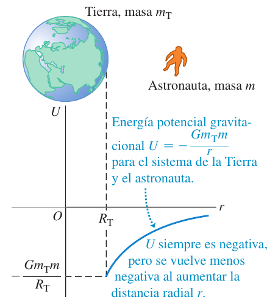
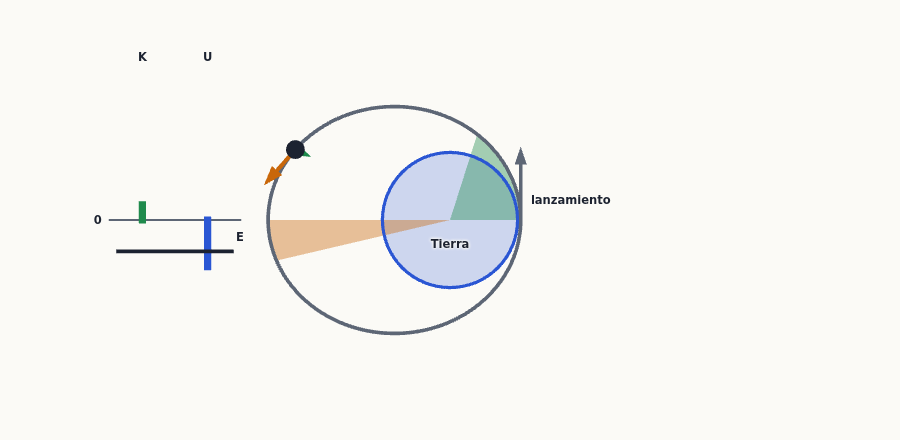
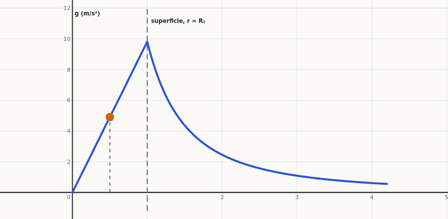

Gravitación
¿Por qué cae una manzana y, sin embargo, la Luna no se nos cae encima? Newton vio que es la misma fuerza: todo cuerpo con masa atrae a todos los demás. En este tema aprenderás la ley de gravitación, por qué $g$ vale lo que vale, la energía potencial gravitacional ($U=-GMm/r$) y con ella la rapidez de escape, cómo se mueven satélites y planetas (órbitas circulares y leyes de Kepler), qué pasa dentro de un planeta, por qué pesas un poco menos en el ecuador y qué es un agujero negro.
El tema en 5 minutos P
Una sola idea: toda masa atrae a toda masa con una fuerza $F=Gm_1m_2/r^2$, y esa misma fuerza explica por qué cae una manzana, cuánto pesas en Marte y por qué la Luna da vueltas en lugar de caerse. Todo el tema son tres herramientas que ya conoces aplicadas a esa fuerza: la segunda ley de Newton (peso, $g$, órbitas circulares, el ecuador de un planeta que gira), la conservación de la energía con una energía potencial nueva, $U=-GMm/r$ (rapidez de escape, caídas desde muy alto, cambios de órbita), y la conservación del momento angular (las leyes de Kepler: más cerca del Sol, más rápido).
Necesitas: $\sum\vec F=m\vec a$ y el movimiento circular uniforme, $a_{rad}=v^2/r=\omega^2r$ (T3-T5); el trabajo, la energía cinética y la conservación de la energía con energía potencial (T6-T7); el momento angular y que una fuerza central no hace torca (T10); la suma de vectores por componentes (T1). Datos de U si el enunciado no da otros: $G=6{,}67\times10^{-11}$ N·m²/kg², $m_T=5{,}97\times10^{24}$ kg, $R_T=6{,}37\times10^6$ m, $m_S=1{,}99\times10^{30}$ kg.
El método en 4 pasos (úsalo siempre, en este orden)
Es el planteamiento de los ejemplos resueltos del capítulo 13 del libro (identificar, plantear, ejecutar, evaluar) aplicado a la gravitación. U p.404-413
Las 6 fórmulas que hay que saber
| Fórmula | Cuándo se usa |
|---|---|
| $F_g=\dfrac{Gm_1m_2}{r^2}$ | «fuerza entre dos masas», «fuerza neta sobre A», «¿cuándo atraigo más al Sol?», «si la distancia se duplica…». |
| $g=\dfrac{GM}{R^2}$, $\ g(r)=\dfrac{GM}{r^2}$, $\ g=\tfrac43\pi G\rho R$ | «gravedad en la superficie de un planeta», «a qué altura $g$ vale…», «con la misma densidad, ¿cómo depende $g$ de $R$?». |
| $U=-\dfrac{GMm}{r}$, $\ v_{esc}=\sqrt{\dfrac{2GM}{R}}$ | «rapidez de escape», «altura máxima», «se deja caer desde muy alto», «energía mecánica mayor o menor que cero», «$mgh$ frente a $GMm/r$». |
| $v=\sqrt{\dfrac{GM}{r}}$, $\ T=\dfrac{2\pi r^{3/2}}{\sqrt{GM}}$, $\ E=-\dfrac{GMm}{2r}$ | «satélite en órbita circular», «geoestacionario», «trabajo para cambiar de órbita». |
| $T^2=\dfrac{4\pi^2a^3}{GM}$, $\ r_{p,a}=a(1\mp e)$, $\ v_pr_p=v_ar_a$ | «leyes de Kepler», «periodo de un planeta o cometa», «perihelio y afelio», «¿cuándo va más rápido?», «masa del cuerpo central». |
| $g_{ec}=g_0-\omega^2R=g_0-\dfrac{4\pi^2R}{T^2}$ | «gravedad en el polo y en el ecuador», «peso aparente», «cuerda de la que cuelga… en el ecuador». |
Qué cae en examen
Han caído 6 preguntas en 5 convocatorias, y aquí manda la teoría: 5 preguntas de teoría de 4 puntos (desarrollar un tema + dos cuestiones cortas) y 1 problema de 3 puntos. Los temas a desarrollar se repiten: «Ley de Newton de la gravitación» (Febrero 2024 y Febrero 2023, X2-X3), «Energía potencial gravitacional» (Febrero 2022 y Septiembre 2022, X4-X5) y «Las leyes de Kepler» (Septiembre 2023, X6). X ×5 El problema pide la gravedad en el polo y en el ecuador de Titán y de Marte (X1). X Las cuestiones cortas se resuelven razonando con $1/r^2$, con el signo de $U$ y de $E$, con «la gravedad es conservativa» y con «$L$ constante».
Elige tu ruta
Esta página + lo marcado 🔴 imprescindible (secciones 1-5 y 7) + X1 + los tres desarrollos modelo de «Preguntas de teoría» con sus cuestiones (X2-X6).
Todo lo anterior + 🟡 el interior de una esfera y los agujeros negros + el resto del «Núcleo» + bloque «Práctica».
Chuleta, errores frecuentes, lista de comprobación; X1 sin mirar la solución y un desarrollo de teoría escrito en una cara en 25 minutos.
¿?¿Qué tipo de problema es? 🔴 P
Lee el enunciado, busca la pista en la primera columna y ve directo al método y al ejercicio modelo.
| Si el enunciado dice… | Haz esto | Ejercicio modelo |
|---|---|---|
| «fuerza neta que $B$ y $C$ ejercen sobre $A$», masas en línea o en un triángulo | Cada módulo con $Gm_1m_2/r^2$ (distancia entre centros), dirección hacia la masa que atrae, y suma vectorial por componentes. | E1, ejemplo 13.3 |
| «¿cuándo atraigo más al Sol?», «si la distancia se duplica…» | Compara distancias al centro del otro cuerpo: $F\propto1/r^2$. La fuerza que yo hago y la que recibo son iguales (tercera ley). | X2 |
| «¿a qué altura $g$ vale la décima parte?», «peso a 400 km de altura» | $g(r)=g_0(R/r)^2$ con $r=R+h$ ⇒ $r=R/\sqrt f$, $h=r-R$. | E2 |
| «tiene 1/8 del radio y 1/1700 de la masa de la Tierra», «densidad media» | Cocientes: $g/g_T=(M/m_T)/(R/R_T)^2$ y $\rho/\rho_T=(M/m_T)/(R/R_T)^3$. | E3 |
| «si todos los planetas tuvieran la misma densidad…» | $M=\rho\tfrac43\pi R^3$ en $g=GM/R^2$ ⇒ $g=\tfrac43\pi G\rho R\propto R$. | X2 |
| «se deja caer desde una altura no pequeña», «altura máxima», «¿hasta dónde sube?» | Energía: $K_1-GMm/r_1=K_2-GMm/r_2$, con $r$ desde el centro. Nada de $mgh$. | E6 |
| «rapidez de escape», «¿escapa?», «energía mecánica mayor o menor que cero» | $E=0$ ⇒ $v_{esc}=\sqrt{2GM/R}$. $E\lt0$ ligado (sube y vuelve), $E\ge0$ escapa. | E4, E5, X4 |
| «satélite en órbita circular a $h$ km: rapidez y periodo» | $r=R+h$ → $v=\sqrt{GM/r}$ → $T=2\pi r/v$. | E7 |
| «geosíncrono / geoestacionario», «periodo dado: ¿a qué altura?» | $r=(GMT^2/4\pi^2)^{1/3}$ y $h=r-R$. | E8 |
| «trabajo de los motores para pasar a otra órbita», «trabajo para ponerlo en órbita» | $E=-GMm/2r$ en cada órbita (en el suelo, $-GMm/R$); $W_{motores}=\Delta E$. | E9, ejemplo 13.6 |
| «trabajo de la gravedad en una órbita completa / entre dos playas» | La gravedad es conservativa: $W=U_1-U_2$; mismo $r$ inicial y final ⇒ $W=0$. En el círculo $\vec F\perp\vec v$ siempre. | X3, X5 |
| «semieje mayor y excentricidad», «periodo», «distancia más cercana y más lejana» | Tercera ley con $a$ (sin $e$); $r_{p,a}=a(1\mp e)$; al revés, $a=(r_p+r_a)/2$. | E10 |
| «rapidez en el perihelio y en el afelio», «¿en qué mes va más rápida la Tierra?» | $L$ constante: $v_pr_p=v_ar_a$, y energía constante. Más cerca, más rápido. | Problema práctico (§5), X6 |
| «masa del agujero negro / del planeta a partir de una órbita», «horizonte de eventos» | $r=vT/2\pi$, $M=4\pi^2r^3/(GT^2)=v^2r/G$; $R_S=2GM/c^2$. | E12 |
| «dentro del planeta», «túnel por el centro», «densidad que disminuye con $r$» | Solo cuenta la masa interior: $g=GM(r)/r^2$, con $M(r)=\int_0^r\rho\,4\pi r^2dr$. | E13, ejemplo 13.10 |
| «gravedad en el polo y en el ecuador», «tensión de la cuerda en el ecuador» | Polo: $g_0=GM/R^2$. Ecuador: $g_0-4\pi^2R/T^2$ (se resta). | X1, E11 |
| «Desarrolle el tema…» (Newton, energía potencial, Kepler) | Guion: enunciado y ecuación → consecuencias → ejemplo con números → las dos cuestiones. | Teoría |
1Ley de Newton de la gravitación 🔴 U p.398-402
Una piedra cae y la Luna da vueltas, pero es la misma atracción: la Luna «cae» continuamente hacia la Tierra con tanta velocidad lateral que siempre se pasa de largo (§4). Y no es cosa de la Tierra: cualquier par de masas se atrae. Tú atraes a tu mesa y la mesa a ti; no lo notas porque la fuerza es minúscula.
$$F_g=\frac{G\,m_1m_2}{r^2}\qquad(13.1)\qquad G=6{,}67\times10^{-11}\ \text{N}\cdot\text{m}^2/\text{kg}^2$$Actúa a lo largo de la recta que une las partículas y es siempre atractiva. Las fuerzas de 1 sobre 2 y de 2 sobre 1 son un par acción-reacción: la misma magnitud aunque las masas sean muy distintas. En forma vectorial, $\vec F_{2\text{ sobre }1}=-\dfrac{Gm_1m_2}{r^2}\,\hat r_{21}$ ($\hat r_{21}$, unitario de 2 hacia 1). Si $r$ se multiplica por $n$, $F$ se divide entre $n^2$: así se contestan sin $G$ muchas cuestiones cortas. Ejemplo mínimo (ejemplos 13.1 y 13.2). Esferas de $0{,}0100$ kg y $0{,}500$ kg con centros a $0{,}0500$ m: $F_g=\dfrac{(6{,}67\times10^{-11})(0{,}0100)(0{,}500)}{(0{,}0500)^2}=1{,}33\times10^{-10}$ N sobre cada una; aceleraciones $1{,}33\times10^{-8}$ y $2{,}66\times10^{-10}$ m/s²: la grande acelera 50 veces menos porque tiene 50 veces más masa. Solo notamos la gravedad de cuerpos astronómicos. Error típico: confundir $G$, constante universal, con $g$, la aceleración que produce un planeta (cambia de un planeta a otro: $g=GM/R^2$, §2); o creer que la Tierra atrae a la manzana más que la manzana a la Tierra: las fuerzas son iguales, las aceleraciones no.
U p.398-401Para medir $G$ hay que medir la fuerza entre dos masas conocidas, una fuerza minúscula. Cavendish (1798) usó una balanza de torsión: dos esferas pequeñas en los extremos de una varilla colgada de una fibra; al acercarles dos esferas grandes, la atracción gira la varilla hasta que la torca elástica de la fibra la equilibra (un rayo de luz reflejado en un espejo amplifica el giro). Medida la fuerza, $G$ sale de (13.1). Conocida $G$, se puede «pesar» la Tierra (§2).
U p.400
Un cuerpo con distribución de masa esféricamente simétrica (la Tierra, la Luna, el Sol) atrae a lo que está fuera de él como si toda su masa estuviera en su centro (13.2): $r$ es la distancia entre centros (dentro, la cosa cambia: §6). Si varios cuerpos atraen a uno, la fuerza total es la suma vectorial de las que ejerce cada uno por separado: módulo con (13.1), componentes, suma. Ejemplo mínimo (ejemplo 13.3). Una estrella de $1{,}00\times10^{30}$ kg en el origen y dos de $8{,}00\times10^{30}$ kg en $(d,0)$ y $(d,d)$, con $d=2{,}00\times10^{12}$ m. La del eje: $F_2=\dfrac{G(8{,}00\times10^{30})(1{,}00\times10^{30})}{d^2}=1{,}33\times10^{26}$ N hacia $+x$. La otra está a $\sqrt2\,d$: $F_1=6{,}67\times10^{25}$ N a $45^\circ$, con componentes $F_{1x}=F_{1y}=4{,}72\times10^{25}$ N. Total: $F_x=1{,}81\times10^{26}$ N, $F_y=4{,}72\times10^{25}$ N ⇒ $F=1{,}87\times10^{26}$ N a $14{,}6^\circ$ sobre el eje $x$. Error típico: sumar módulos sin mirar las direcciones, o medir la distancia hasta la superficie en lugar de entre centros.
U p.399-402✍️ Comprueba que lo has entendido (2 min)
- Dos esferas de plomo de 50 kg tienen sus centros a 0,50 m. ¿Con qué fuerza se atraen?
Ver respuesta
$F=\dfrac{(6{,}67\times10^{-11})(50)(50)}{0{,}50^2}=6{,}67\times10^{-7}$ N: menos de una millonésima de newton. - Duplicas las dos masas y también la distancia entre ellas. ¿Cómo cambia la fuerza?
Ver respuesta
No cambia: el producto de masas se multiplica por 4 y $r^2$ también por 4. - La Tierra atrae a una manzana de 0,20 kg con 1,96 N. ¿Con qué fuerza atrae la manzana a la Tierra? ¿Qué aceleración le produce?
Ver respuesta
Con 1,96 N (tercera ley). $a_T=1{,}96/(5{,}97\times10^{24})=3{,}28\times10^{-25}$ m/s²: inapreciable.
2Peso y aceleración de la gravedad 🔴 U p.402-404
Tu peso es la fuerza gravitacional total que la Tierra ejerce sobre ti. En la superficie (masa $m_T$, radio $R_T$) y a una distancia $r\ge R_T$ del centro:
$$w=\frac{Gm_Tm}{R_T^2}\ (13.3)\ \Longrightarrow\ g=\frac{Gm_T}{R_T^2}\ (13.4)\qquad\quad w(r)=\frac{Gm_Tm}{r^2}\ (13.5)$$$g$ no depende de la masa del cuerpo (todos caen igual). Despejando, $m_T=gR_T^2/G=5{,}96\times10^{24}$ kg: así se «pesa» la Tierra. A doble distancia del centro, la cuarta parte de peso. Ejemplo mínimo (ejemplo 13.4). Un módulo que pesa 3430 N en la Tierra tiene $m=3430/9{,}80=350$ kg, y la masa viaja con él. En Marte ($m_M=6{,}42\times10^{23}$ kg, $R_M=3{,}39\times10^6$ m): $w=\dfrac{Gm_Mm}{R_M^2}=1{,}30\times10^3$ N y $g_M=w/m=3{,}7$ m/s². Marte tiene el 11 % de la masa terrestre pero su $g$ es el 40 %: el radio (53 %) entra al cuadrado en el denominador. Error típico: poner la altura en lugar de la distancia al centro. A 400 km de altura, $r=6370+400=6770$ km, y allí el peso es todavía el 89 % del de la superficie (los astronautas flotan por otra razón, §4).
U p.403-404La densidad media de un cuerpo esférico es $\rho=\dfrac{M}{\tfrac43\pi R^3}$. Para la Tierra, $V_T=1{,}08\times10^{21}$ m³ y $\rho=5500$ kg/m³; las rocas de la superficie tienen entre 2000 y 3300 kg/m³, así que el interior es mucho más denso (unos 13 000 kg/m³ en el centro): la Tierra no es uniforme. Sustituyendo $M=\rho\,\tfrac43\pi R^3$ en $g=GM/R^2$:
$$g=\tfrac43\pi G\rho R\qquad\Longrightarrow\qquad\text{a igual densidad, } g\propto R$$Ejemplo mínimo: con $\rho=5500$ kg/m³ y $R=R_T$ sale $g=9{,}79$ m/s² ✓. Un planeta con la misma densidad y doble radio tendría doble $g$ (y ocho veces más masa). Error típico: «$g\propto M$ y $M\propto R^3$, luego $g\propto R^3$»: falta dividir entre $R^2$ (cuestión de examen, X2).
U p.404✍️ Comprueba que lo has entendido (2 min)
- ¿A qué altura sobre el suelo pesas la cuarta parte que en la superficie terrestre?
Ver respuesta
A doble distancia del centro: $r=2R_T$, es decir, $h=R_T=6370$ km (no a $4R_T$). - Un planeta tiene el doble de masa y el doble de radio que la Tierra. ¿Cuánto vale $g$ en su superficie?
Ver respuesta
$g=9{,}80\cdot\dfrac{2}{2^2}=4{,}90$ m/s²: la mitad. - Una persona de 70 kg sube a la Estación Espacial, a 400 km de altura. ¿Cuál es allí su peso (la atracción de la Tierra)?
Ver respuesta
$w=\dfrac{Gm_Tm}{r^2}=\dfrac{(6{,}67\times10^{-11})(5{,}97\times10^{24})(70)}{(6{,}77\times10^6)^2}=608$ N, frente a unos 686 N en el suelo: no es cero.
3Energía potencial gravitacional 🔴 U p.405-407
$U=mgy$ supone $g$ constante; lejos del suelo $g$ disminuye y la fórmula falla. Cuando el cuerpo pasa de $r_1$ a $r_2$ (medidas desde el centro), la gravedad ($F_r=-Gm_Tm/r^2$, ec. 13.7) hace un trabajo
$$W_{grav}=\int_{r_1}^{r_2}F_r\,dr=Gm_Tm\left(\frac1{r_2}-\frac1{r_1}\right)\ (13.8)\qquad\Longrightarrow\qquad\boxed{\,U=-\frac{Gm_Tm}{r}\,}\ (13.9)$$Ese trabajo solo depende de $r_1$ y de $r_2$, no del camino: la gravedad es conservativa, y se define $U$ con $W_{grav}=U_1-U_2$ y $U=0$ en el infinito. $U$ es siempre negativa y aumenta (se hace menos negativa) al alejarse: la Tierra es un pozo y subir cuesta energía. Es la energía del sistema Tierra-cuerpo; solo importan las diferencias de $U$. Ejemplo mínimo: un satélite de 1000 kg que sube de $R_T$ a $2R_T$ gana $\Delta U=\dfrac{Gm_Tm}{R_T}-\dfrac{Gm_Tm}{2R_T}=\dfrac{Gm_Tm}{2R_T}=3{,}13\times10^{10}$ J. Error típico: mezclar dependencias, porque $F\propto1/r^2$ pero $U\propto1/r$ (a doble distancia la fuerza se divide entre 4 y $U$ solo entre 2); u olvidar el signo menos.
U p.405-406
Cerca del suelo, $r_1\approx r_2\approx R_T$ y (13.8) da $W_{grav}\approx\dfrac{Gm_Tm}{R_T^2}(r_1-r_2)=mg(r_1-r_2)$: $mgy$ es el caso particular de $-GMm/r$ para alturas pequeñas, con el cero en el suelo. La cuenta exacta para subir una altura $h$ es
$$\Delta U=\frac{Gm_Tm\,h}{R_T(R_T+h)}=mgh\,\frac{R_T}{R_T+h}$$Ejemplo mínimo: el error de $mgh$ es la fracción $h/(R_T+h)$: un 0,16 % a 10 km de altura, pero un 50 % a $h=R_T$ (en el ejemplo anterior, $mgR_T=6{,}24\times10^{10}$ J, el doble de lo correcto). Error típico: decir que $mgh$ «crece con $h$» y $GMm/r$ «decrece con $r$» y que se contradicen: la expresión general lleva un signo menos y también crece al alejarse (cuestión de examen, X5).
U p.406-407Si solo trabaja la gravedad, $E=K+U=\tfrac12mv^2-\dfrac{GMm}{r}$ se conserva: $K_1+U_1=K_2+U_2$. La rapidez de escape es la mínima para llegar al infinito ($U=0$) con $K=0$, es decir, con $E=0$:
$$\tfrac12mv^2-\frac{GMm}{R}=0\ \Longrightarrow\ v_{esc}=\sqrt{\frac{2GM}{R}}\qquad(\text{Tierra: }1{,}12\times10^4\ \text{m/s}=11{,}2\ \text{km/s})$$No depende de la masa del cuerpo ni de la dirección de lanzamiento. El signo de $E$ decide: $E\lt0$ ⇒ ligado (sube hasta $r_{máx}=GMm/|E|$ y vuelve); $E\ge0$ ⇒ escapa. Ejemplo mínimo (ejemplo 13.5). ¿Rapidez mínima para subir desde la superficie hasta $r=2R_T$? $\tfrac12mv_1^2-\dfrac{Gm_Tm}{R_T}=0-\dfrac{Gm_Tm}{2R_T}$ ⇒ $v_1=\sqrt{Gm_T/R_T}=7910$ m/s; para escapar ($r_2=\infty$), $v_1=\sqrt{2Gm_T/R_T}=1{,}12\times10^4$ m/s. Error típico: olvidar el 2 ($\sqrt{GM/R}$ es la rapidez de una órbita rasante, no la de escape), o usar $mgh$ para alturas grandes (con $mgh$ siempre habría una altura máxima finita y no existiría el escape).
U p.406✍️ Comprueba que lo has entendido (2 min)
- Un satélite de 1000 kg sube desde la superficie hasta $r=2R_T$. ¿Cuánto aumenta $U$? ¿Qué daría $mgh$?
Ver respuesta
$\Delta U=\dfrac{Gm_Tm}{2R_T}=3{,}13\times10^{10}$ J. Con $mgh=1000(9{,}80)(6{,}37\times10^6)=6{,}24\times10^{10}$ J, el doble: $mgh$ no vale a esa altura. - Calcula la rapidez de escape de la Luna ($M=7{,}35 imes10^{22}$ kg, $R=1{,}74 imes10^6$ m). ¿Depende de la masa del cohete?
Ver respuesta
$v_{esc}=\sqrt{2GM/R}=2{,}37\times10^3$ m/s $=2{,}37$ km/s. No: la $m$ se simplifica. - Un proyectil sale de la superficie con energía mecánica total $E=-2 imes10^9$ J. ¿Escapa?
Ver respuesta
No: con $E\lt0$ está ligado; sube hasta $r_{máx}=GMm/|E|$ (donde $K=0$) y vuelve a caer.
4Movimiento de satélites 🔴 U p.407-410
Un cañón en lo alto de una montaña dispara horizontalmente. Con poca velocidad, el proyectil cae cerca; con más, más lejos. Como la Tierra es redonda, con velocidad suficiente el suelo se curva tanto como cae el proyectil: sigue cayendo, pero alrededor de la Tierra. Eso es un satélite. La gravedad actúa todo el rato; lo que mantiene la órbita es la velocidad lateral. Con más velocidad aún, la órbita se abre y el proyectil escapa.
U p.407
La única fuerza sobre el satélite es la gravedad, y hace de fuerza centrípeta: $\dfrac{Gm_Tm}{r^2}=\dfrac{mv^2}{r}$. De ahí:
$$v=\sqrt{\frac{Gm_T}{r}}\ \ (13.10)\qquad T=\frac{2\pi r}{v}=\frac{2\pi\,r^{3/2}}{\sqrt{Gm_T}}\ \ (13.11,\,13.12)$$Más alta ⇒ más lenta y con más periodo; $v$ no depende de la masa del satélite. Como $\vec F_g\perp\vec v$, la gravedad no hace trabajo y la rapidez es constante. A la misma distancia, $v_{esc}=\sqrt2\,v_{circ}$. Ejemplo mínimo (ejemplo 13.6a). Satélite a 300 km de altura: $r=6370+300=6670$ km ⇒ $v=7730$ m/s, $T=5420$ s $=90{,}4$ min y $a_{rad}=v^2/r=8{,}95$ m/s² (la $g$ de esa altura). Para la Estación Espacial ($r\approx6800$ km) sale $7{,}65$ km/s y 93,1 min, como los valores medidos. Error típico: usar la altura $h$ como radio de la órbita.
U p.408-410$E$ es negativa (sistema ligado) y se cumple $U=-2K$, $E=-K$. El trabajo que hacen los motores (o cualquier otra fuerza) es $W_{otras}=E_2-E_1$. Ejemplo mínimo (ejemplo 13.6b-c). Poner 1000 kg en la órbita de 300 km partiendo del reposo en el suelo (sin contar la rotación terrestre): $E_1=-Gm_Tm/R_T=-6{,}25\times10^{10}$ J y $E_2=-Gm_Tm/2r=-2{,}98\times10^{10}$ J ⇒ $W=3{,}27\times10^{10}$ J; para que luego escape ($E=0$) faltan otros $2{,}98\times10^{10}$ J. Error típico: creer que subir de órbita aumenta la rapidez: al subir $K$ baja, $U$ sube el doble de lo que baja $K$, y $E$ aumenta (E9).
U p.409-410Los astronautas de la Estación Espacial (a unos 400 km) no están fuera del alcance de la gravedad: allí $g=8{,}7$ m/s², el 89 % del valor en el suelo. Flotan porque están en caída libre: la nave y el astronauta tienen la misma aceleración hacia la Tierra, así que nada empuja al astronauta contra el piso. Eso es la ingravidez aparente, y aparece siempre que la gravedad sea la única fuerza (órbitas circulares, elípticas o abiertas). La gravedad solo se anula a distancia infinita; sin ella no habría órbita.
U p.408✍️ Comprueba que lo has entendido (2 min)
- Un satélite gira en órbita circular de radio $2R_T$. ¿Rapidez y periodo?
Ver respuesta
$v=\sqrt{Gm_T/2R_T}=5{,}59\times10^3$ m/s; $T=2\pi r/v=1{,}43\times10^4$ s $=3{,}98$ h. - Si pasas un satélite a una órbita circular de radio 4 veces mayor, ¿cómo cambian $v$ y $T$?
Ver respuesta
$v\propto1/\sqrt r$ ⇒ se divide entre 2; $T\propto r^{3/2}$ ⇒ se multiplica por 8. - Un satélite de 500 kg gira en una órbita circular de radio $7{,}00 imes10^6$ m. ¿Cuánto valen $K$, $U$ y $E$?
Ver respuesta
$E=-\dfrac{Gm_Tm}{2r}=-1{,}42\times10^{10}$ J; $K=-E=1{,}42\times10^{10}$ J; $U=2E=-2{,}84\times10^{10}$ J.
5Las leyes de Kepler y el movimiento de los planetas 🔴 U p.410-414
Kepler las obtuvo (1601-1619) de las observaciones de Tycho Brahe sin saber por qué; Newton demostró que son consecuencia de sus leyes del movimiento y de la gravitación.
- Primera: cada planeta se mueve en una elipse con el Sol en uno de sus focos.
- Segunda: la recta del Sol al planeta barre áreas iguales en tiempos iguales.
- Tercera: el cuadrado del periodo es proporcional al cubo del semieje mayor.
Las dos ideas prácticas: más cerca del Sol ⇒ más rápido; órbita más grande ⇒ periodo mucho mayor ($T\propto a^{3/2}$).
U p.410-411Una elipse tiene dos focos $S$ y $S'$ (la suma de distancias de cada punto a los dos focos es constante). El semieje mayor $a$ es la mitad del eje largo; la excentricidad $e$ ($0\le e\lt1$) dice cuánto se separa cada foco del centro: está a $ea$. Con $e=0$, un círculo. Con el Sol en $S$:
$$r_p=a(1-e)\ \ \text{(perihelio, el punto más cercano)}\qquad r_a=a(1+e)\ \ \text{(afelio, el más lejano)}\qquad r_p+r_a=2a$$Las órbitas planetarias son casi circulares (Tierra $e=0{,}017$; Mercurio $0{,}206$). Con una fuerza $\propto1/r^2$ las órbitas cerradas son elipses y las abiertas, parábolas o hipérbolas. Ejemplo mínimo (ejemplo 13.9). El cometa Halley pasa a $8{,}75\times10^7$ km del Sol y se aleja hasta $5{,}26\times10^9$ km: $a=(r_p+r_a)/2=2{,}67\times10^{12}$ m y $e=1-r_p/a=0{,}967$ (órbita muy alargada). Error típico: tomar $a$ como la distancia al Sol (es la media entre perihelio y afelio), o poner el Sol en el centro de la elipse.
U p.411-413
En un tiempo corto $dt$ el radio vector barre un triángulo de área $dA=\tfrac12r\,(r\,d\theta)$. La velocidad areolar es
$$\frac{dA}{dt}=\tfrac12r^2\frac{d\theta}{dt}=\tfrac12\,rv\sin\phi=\frac{|\vec r\times m\vec v|}{2m}=\frac{L}{2m}\qquad(13.14\text{-}13.16)$$($\phi$: ángulo entre $\vec r$, del Sol al planeta, y $\vec v$). La gravedad es una fuerza central (apunta al Sol): su torca respecto al Sol es cero ⇒ $\vec L$ es constante ⇒ áreas iguales en tiempos iguales, y además la órbita es plana. En los ápsides (perihelio y afelio, donde $\vec r\perp\vec v$): $v_pr_p=v_ar_a$. Ejemplo mínimo (ejemplo 13.7). ¿Dónde va más rápido un planeta? En el perihelio: con $r$ menor necesita más $v$ para barrer la misma área. Por energía, igual: allí $U$ es más negativa y $K=E-U$, mayor. Para el Halley, $v_p/v_a=r_a/r_p=60$. Error típico: creer que la rapidez orbital es constante en una elipse, o usar $v_pr_p=v_ar_a$ en puntos donde $\vec v$ no es perpendicular a $\vec r$.
U p.411-412Para un círculo ya la tienes (§4): $T=2\pi r^{3/2}/\sqrt{Gm_S}$. Newton demostró que vale para la elipse cambiando $r$ por el semieje mayor $a$:
$$T^2=\frac{4\pi^2}{Gm_S}\,a^3\qquad\Longleftrightarrow\qquad T=\frac{2\pi\,a^{3/2}}{\sqrt{Gm_S}}\qquad(13.17)$$No depende de la excentricidad ni de la masa del planeta: solo de $a$ y de la masa del Sol. Al revés, con el $T$ y el $a$ de un satélite se «pesa» el cuerpo central: $M=4\pi^2a^3/(GT^2)$. (En rigor, el Sol y el planeta giran alrededor de su centro de masa común, muy cerca del centro del Sol; el «bamboleo» que eso produce en otras estrellas delata planetas que no se ven.) Ejemplo mínimo (ejemplos 13.8 y 13.9). Palas: $T=4{,}62$ años $=1{,}46\times10^8$ s ⇒ $a=\left(\dfrac{Gm_ST^2}{4\pi^2}\right)^{1/3}=4{,}15\times10^{11}$ m (entre Marte y Júpiter); su excentricidad no hace falta. Halley: $a=2{,}67\times10^{12}$ m ⇒ $T=2{,}38\times10^9$ s, unos 75 años y medio. Error típico: meter la excentricidad en la tercera ley, o usar $T$ en años con $G$ en el SI.
U p.412-414Para el cometa Halley ($m=2{,}2\times10^{14}$ kg, $r_p=8{,}75\times10^{10}$ m, $r_a=5{,}26\times10^{12}$ m), halla $v_p$, $v_a$ y las energías en los dos puntos.
- Dos conservaciones: momento angular en los ápsides, $v_pr_p=v_ar_a$; energía, $\tfrac12v_p^2-\dfrac{Gm_S}{r_p}=\tfrac12v_a^2-\dfrac{Gm_S}{r_a}$ (dividida entre $m$).
- Resolver: sustituyendo $v_a=v_pr_p/r_a$, $v_p=\sqrt{\dfrac{2Gm_S\,(1/r_p-1/r_a)}{1-(r_p/r_a)^2}}=5{,}46\times10^4$ m/s y $v_a=909$ m/s.
- Energías: perihelio, $K_p=3{,}28\times10^{23}$ J y $U_p=-3{,}34\times10^{23}$ J; afelio, $K_a=9{,}08\times10^{19}$ J y $U_a=-5{,}55\times10^{21}$ J. En los dos, $E=-5{,}46\times10^{21}$ J $=-\dfrac{Gm_Sm}{2a}$: la 13.13 con $a$ en lugar de $r$.
- Forma general: $v_p=\sqrt{\dfrac{Gm_S}{a}\dfrac{1+e}{1-e}}$, $v_a=\sqrt{\dfrac{Gm_S}{a}\dfrac{1-e}{1+e}}$; con $e=0$ las dos dan $\sqrt{Gm_S/a}$, la del círculo ✓.

✍️ Comprueba que lo has entendido (2 min)
- Un asteroide tiene un semieje mayor de 4 UA (la Tierra, 1 UA y 1 año). ¿Cuál es su periodo?
Ver respuesta
$T\propto a^{3/2}$: $T=4^{3/2}=8$ años. La excentricidad no importa. - Un cometa tiene $r_p=1{,}0 imes10^{11}$ m y $r_a=5{,}0 imes10^{12}$ m. Halla $a$, $e$ y el cociente $v_a/v_p$.
Ver respuesta
$a=(r_p+r_a)/2=2{,}55\times10^{12}$ m; $e=\dfrac{r_a-r_p}{r_a+r_p}=0{,}961$; $v_a/v_p=r_p/r_a=0{,}02$ (50 veces más lento en el afelio). - La Luna da una vuelta en 27,3 días a $3{,}84 imes10^8$ m del centro de la Tierra. Calcula con eso la masa de la Tierra.
Ver respuesta
$M=\dfrac{4\pi^2r^3}{GT^2}$ con $T=27{,}3\cdot86\,400=2{,}36\times10^6$ s: $M=6{,}02\times10^{24}$ kg ✓.
6Distribuciones esféricas de masa 🟡 U p.414-417
Piensa en un planeta como una cebolla de cascarones esféricos. Newton demostró que un cascarón (1) atrae a lo que está fuera como si su masa estuviera en el centro y (2) no atrae nada a lo que está dentro: el trozo cercano tiene poca masa pero está cerca y el lejano tiene más masa pero está más lejos, y se compensan exactamente.
- Cascarón de masa $M$ y radio $R$, punto exterior ($r\gt R$): $F=\dfrac{GMm}{r^2}$ y $U=-\dfrac{GMm}{r}$ (13.24).
- Punto interior ($r\lt R$): $U=-\dfrac{GMm}{R}$ es constante ⇒ $F=0$ (13.25-13.26).
- Esfera sólida: fuera, como una partícula; dentro, solo atrae la masa $M(r)$ que hay a menos de $r$ del centro: $F=GM(r)m/r^2$.
Ejemplo mínimo (ejemplo 13.10). Túnel por el centro de una Tierra uniforme: $M(r)=m_T(r/R_T)^3$ ⇒ $F_g=\dfrac{Gm_Tm}{R_T^3}\,r$. Crece linealmente con $r$ (como un resorte): nula en el centro y $Gm_Tm/R_T^2$ en la superficie. Si la densidad no es uniforme, $M(r)=\int_0^r\rho\,4\pi r'^2\,dr'$ (E13). Error típico: usar $1/r^2$ con la masa total para un punto interior.
U p.414-417Demostración del cascarón por anillos (opcional) U p.414-416
Cascarón de masa $M$ y radio $R$; punto $P$ a distancia $r$ del centro. Se corta el cascarón en anillos de ángulo $\phi$ (medido desde el eje que va al punto) y se suman sus energías potenciales.
- Un anillo. Todas sus partículas están a la misma distancia $s$ de $m$, así que $dU=-\dfrac{Gm\,dM}{s}$ (13.18).
- Su masa. El anillo tiene radio $R\sin\phi$ y ancho $R\,d\phi$: área $dA=2\pi R^2\sin\phi\,d\phi$. Como la masa es proporcional al área ($4\pi R^2$ en total): $\dfrac{dM}{M}=\tfrac12\sin\phi\,d\phi$ (13.19), luego $dU=-\dfrac{GMm}{2s}\sin\phi\,d\phi$ (13.20).
- Cambio de variable $\phi\to s$. Por Pitágoras, $s^2=r^2-2rR\cos\phi+R^2$ (13.21). Diferenciando: $2s\,ds=2rR\sin\phi\,d\phi$, es decir, $\sin\phi\,d\phi=\dfrac{s\,ds}{rR}$. Entonces $dU=-\dfrac{GMm}{2rR}\,ds$ (13.22).
- Integrar con $\phi$ de 0 a $\pi$. Si $P$ está fuera ($r\gt R$), $s$ va de $r-R$ a $r+R$: $U=-\dfrac{GMm}{2rR}\big[(r+R)-(r-R)\big]=-\dfrac{GMm}{r}$ (13.23-13.24).
- Si $P$ está dentro ($r\lt R$) todo igual, pero $s$ va de $R-r$ a $R+r$: $U=-\dfrac{GMm}{2rR}\big[(R+r)-(R-r)\big]=-\dfrac{GMm}{R}$ (13.25-13.26): no depende de $r$ ⇒ la fuerza $-dU/dr$ es cero.

✍️ Comprueba que lo has entendido (2 min)
- En una Tierra uniforme, ¿cuánto vale $g$ a mitad de camino hacia el centro ($r=R_T/2$)?
Ver respuesta
Dentro, $g=g_0\,r/R_T$: $g=9{,}80/2=4{,}90$ m/s². - Una masa está dentro de un cascarón esférico hueco, fuera del centro. ¿Qué fuerza le hace el cascarón?
Ver respuesta
Ninguna: $U$ es constante dentro del cascarón ⇒ $F=0$ en cualquier punto interior, no solo en el centro. - En una Tierra uniforme, ¿a qué dos distancias del centro vale $g$ la cuarta parte de $g_0$?
Ver respuesta
Dentro, $g_0r/R=g_0/4$ ⇒ $r=R_T/4$. Fuera, $g_0(R/r)^2=g_0/4$ ⇒ $r=2R_T$.
7Peso aparente y rotación terrestre 🔴 U p.417-419
La Tierra gira: quien está en el ecuador da una vuelta al día en un círculo de radio $R_T$, parte de la atracción «se gasta» en esa aceleración centrípeta y la báscula empuja un poco menos. En el polo no describe ningún círculo y la báscula marca todo el peso. El peso verdadero $\vec w_0$ es la atracción gravitacional, de módulo $Gm_Tm/R_T^2$; el peso aparente $\vec w$ es lo que marca una báscula de resorte: $\vec w=-\vec F$, con $\vec F$ la fuerza de la báscula sobre el cuerpo. La «aceleración de la gravedad» de un lugar es la del peso aparente, $\vec g=\vec w/m$: la aceleración con la que cae un cuerpo visto desde la Tierra que gira (sin rotación sería $\vec g_0=\vec w_0/m$).
U p.417-418Polo: el cuerpo está en equilibrio, $F=w_0$ ⇒ $w=w_0$ y $g=g_0=GM/R^2$. Ecuador: describe un círculo de radio $R$, así que hace falta una fuerza neta hacia el centro, $w_0-F=mv^2/R$:
$$w=w_0-\frac{mv^2}{R_T}\quad(13.27)\qquad\Longrightarrow\qquad g=g_0-\omega^2R=g_0-\frac{4\pi^2R}{T^2}$$En latitudes intermedias se resta como vectores: $\vec g=\vec g_0-\vec a_{rad}$ (13.28). Ejemplo mínimo (la Tierra). Con $T=86\,164$ s (el día sidéreo): $v=465$ m/s y $\omega^2R_T=0{,}0339$ m/s², un 0,35 % de $g_0$. Las medidas (tabla 13.1) dan algo menos de $g$ cerca del ecuador (Zona del Canal, 9° N: $9{,}78243$ m/s²), aunque también influyen la altitud y la densidad del terreno. Error típico: sumar la centrípeta en vez de restarla (en el ecuador el suelo empuja menos); dejar $R$ en km o $T$ en horas; o decir «no hay diferencia» sin comparar $\omega^2R$ con $g_0$ (la fracción es $\omega^2R^3/GM$, X1).
U p.418
✍️ Comprueba que lo has entendido (2 min)
- Un planeta tiene $R=6{,}0 imes10^6$ m y gira en 10 h. ¿Cuánto menor es $g$ en su ecuador que en sus polos?
Ver respuesta
$\omega^2R=\dfrac{4\pi^2(6{,}0\times10^6)}{(36\,000)^2}=0{,}183$ m/s² (con $T=10\cdot3600=36\,000$ s). - Una persona de 80 kg se pesa en el polo y en el ecuador terrestre. ¿Cuánto menos marca la báscula en el ecuador (solo por la rotación)?
Ver respuesta
$m\omega^2R_T=80(0{,}0339)=2{,}71$ N: un 0,35 %. - ¿Con qué periodo de rotación sería $g=0$ en el ecuador terrestre?
Ver respuesta
$\omega^2R_T=g_0$ ⇒ $T=2\pi\sqrt{R_T/g_0}=2\pi\sqrt{6{,}37\times10^6/9{,}80}=5{,}07\times10^3$ s $\approx84$ min.
8Agujeros negros 🟡 U p.419-422
Si comprimes una masa en un radio cada vez menor, la rapidez de escape de su superficie crece; cuando supera la de la luz, ni la luz sale: es un agujero negro. Con la densidad media $\rho$:
$$v_{esc}=\sqrt{\frac{2GM}{R}}=\sqrt{\frac{8\pi G\rho}{3}}\;R\quad(13.29)\qquad\qquad R_S=\frac{2GM}{c^2}\quad(13.30)$$Un cuerpo esférico sin rotación de masa $M$ y radio menor que $R_S$ (el radio de Schwarzschild) es un agujero negro; la esfera de radio $R_S$ es el horizonte de eventos: nada de lo que pasa dentro se ve desde fuera. Imponer $v_{esc}=c$ da el $R_S$ correcto, aunque por coincidencia (ni la energía de la luz es $\tfrac12mc^2$ ni la 13.9 vale tan cerca); Schwarzschild (1916) lo obtuvo con la relatividad general. Lejos, su gravedad es la de cualquier cuerpo de igual masa: si el Sol se convirtiera en agujero negro, las órbitas de los planetas no cambiarían. Ejemplo mínimo (ejemplo 13.11). Una estrella de $6{,}0\times10^{30}$ kg (unas tres masas solares) que colapsa: $R_S=\dfrac{2(6{,}67\times10^{-11})(6{,}0\times10^{30})}{(3{,}00\times10^8)^2}=8{,}9\times10^3$ m $=8{,}9$ km, con densidad media $2{,}0\times10^{18}$ kg/m³ (la de un núcleo atómico). Como comparación, el Sol tiene $\rho=1410$ kg/m³ y $v_{esc}=6{,}18\times10^5$ m/s $\approx c/500$. Error típico: olvidar el 2 o no elevar $c$ al cuadrado; confundir $R_S$ con el radio de la órbita de la materia que gira alrededor.
U p.419-421Desde fuera solo se puede conocer la masa, la carga eléctrica y el momento angular del agujero negro. Dentro de $R_S$ la masa sigue colapsando hasta un punto de densidad infinita, la singularidad. Quien viera caer una nave notaría su radio cada vez más «grave» (corrimiento gravitacional al rojo) y sus relojes cada vez más lentos (dilatación del tiempo); el viajero, antes de llegar, sería estirado por las fuerzas de marea (la atracción en los pies, mayor que en la cabeza). Se detectan por el disco de acreción, gas a más de $10^6$ K que emite rayos X, y por las estrellas que orbitan un objeto invisible: alrededor de Sgr A*, en el centro de nuestra galaxia, giran a más de 1500 km/s en torno a $8{,}2\times10^{36}$ kg (4,1 millones de masas solares) concentrados en menos de $4{,}4\times10^{10}$ m, compatibles con un agujero negro de $R_S=1{,}2\times10^{10}$ m.
U p.421-422✍️ Comprueba que lo has entendido (2 min)
- ¿A qué radio habría que comprimir la Tierra para que fuera un agujero negro?
Ver respuesta
$R_S=\dfrac{2Gm_T}{c^2}=8{,}85\times10^{-3}$ m: unos 9 mm. - ¿Y el Sol?
Ver respuesta
$R_S=\dfrac{2Gm_S}{c^2}=2{,}95\times10^3$ m, unos 3 km (hoy su radio es de $6{,}96\times10^8$ m). - Si el Sol se convirtiera en un agujero negro de la misma masa, ¿cambiaría la órbita de la Tierra?
Ver respuesta
No: fuera del cuerpo la gravedad solo depende de la masa ($GMm/r^2$), no del radio.
9Ejercicios resueltos
Las 6 preguntas de examen real (X1-X6) están todas aquí, completas: el problema de Titán y Marte en el «Núcleo» y las cinco de teoría, con sus cuestiones y los tres «desarrollos modelo» (uno por tema a desarrollar), en su propio bloque. Los acompañan los 13 ejercicios del solucionario (E1-E13, traducidos y ampliados), ordenados por método, no por fuente: diez en el Núcleo (uno por método) y cuatro de Práctica que repiten esos métodos en otras situaciones. Intenta resolver tú antes de abrir la solución. Cada ejercicio termina con su receta. Datos de U si el enunciado no dice otra cosa: $G=6{,}67\times10^{-11}$ N·m²/kg², $m_T=5{,}97\times10^{24}$ kg, $R_T=6{,}37\times10^6$ m, $m_S=1{,}99\times10^{30}$ kg, $c=3{,}00\times10^8$ m/s, 1 año $=3{,}156\times10^7$ s; datos de los planetas en el Apéndice G (p. A-8). Si el enunciado da otro valor de $G$ (como X1), ese.
| Ejercicio | Qué tipo es | Método que te llevas |
|---|---|---|
| E1 | Fuerza neta de varias masas en línea | Módulo de cada una con $Gm_1m_2/r^2$ (distancia entre centros), signo según el lado en que está la masa que atrae, y suma |
| E2 | ¿A qué altura $g$ es una fracción de la de la superficie? | $g\propto1/r^2$ con $r$ desde el centro ⇒ $r=R_T/\sqrt f$ y $h=r-R_T$ |
| E6 | Caída desde una altura comparable al radio | $K_1-GMm/r_1=K_2-GMm/r_2$; comprueba el límite $h\ll R$ ⇒ $\sqrt{2gh}$ |
| E4 | Rapidez de escape de un planeta | $E=0$ en el infinito ⇒ $v_{esc}=\sqrt{2GM/R}$; no depende de la masa del cuerpo |
| E7 | Satélite en órbita circular a una altura dada | $r=R+h$ → $v=\sqrt{GM/r}$ → $T=2\pi r/v$ |
| E9 | Trabajo de los motores para cambiar de órbita | $E=-GMm/2r$ en cada órbita; $W=\Delta E$, con $\Delta U=-2\Delta K$ |
| E10 | Órbita elíptica: periodo y distancias extremas | $T$ con la tercera ley usando $a$ (sin $e$); $r_{p,a}=a(1\mp e)$ |
| E13 | Planeta con densidad que varía con $r$ | $M=\int_0^R\rho(r)\,4\pi r^2dr$ y luego $g=GM/R^2$ |
| X1 · Feb 2024 | Gravedad en el polo y en el ecuador de un cuerpo que gira | $g_{polo}=GM/R^2$; $g_{ec}=GM/R^2-4\pi^2R/T^2$; todo en SI y compara $\omega^2R$ con $g_0$ |
| E12 | Masa de un cuerpo central a partir de una órbita; horizonte | $r=vT/2\pi$, $M=4\pi^2r^3/(GT^2)=v^2r/G$; $R_S=2GM/c^2$ |
E1 — Ejercicio 13.6: fuerza neta de dos masas sobre una tercera, en línea E 🔴 U p.425
Obtén la magnitud y la dirección de la fuerza gravitacional neta que las masas $B$ y $C$ ejercen sobre la masa $A$ en la figura E13.6. Cada masa es de 2,00 kg. En la figura: a) en línea, $A$ — 10 cm — $C$ — 40 cm — $B$; b) $C$ — 10 cm — $A$ — 40 cm — $B$.

- Modelo. Esferas uniformes ⇒ atraen como partículas en su centro (13.2). Cada fuerza es atractiva: apunta desde $A$ hacia la masa que la ejerce. Por superposición, la fuerza neta es la suma vectorial; al estar todo en una recta basta un eje $x$ (+ a la derecha) y sumar con signo.
- Fuerza de $C$ en los dos casos ($0{,}10$ m): $F_C=\dfrac{(6{,}67\times10^{-11})(2{,}00)(2{,}00)}{(0{,}10)^2}=2{,}67\times10^{-8}$ N.
- a) $C$ y $B$ están las dos a la derecha de $A$ ⇒ las dos fuerzas van hacia $+x$. $r_{AB}=0{,}10+0{,}40=0{,}50$ m ⇒ $F_B=\dfrac{G(4{,}00)}{0{,}50^2}=1{,}07\times10^{-9}$ N. Neta: $2{,}67\times10^{-8}+0{,}107\times10^{-8}=\mathbf{2{,}8\times10^{-8}\ N}$ hacia la derecha.
- b) Ahora $C$ está a la izquierda ($-x$) y $B$ a la derecha a $r_{AB}=0{,}40$ m: $F_B=\dfrac{G(4{,}00)}{0{,}40^2}=1{,}67\times10^{-9}$ N. Neta: $-2{,}67\times10^{-8}+0{,}167\times10^{-8}=-2{,}50\times10^{-8}$ N ⇒ $2{,}5\times10^{-8}$ N hacia la izquierda (hacia $C$).
- Interpretación. Domina siempre la masa cercana: a una distancia 4 o 5 veces mayor la fuerza es 16 o 25 veces menor ($1/r^2$).
Sumar módulos sin mirar el sentido (en b se restan); medir $r_{AB}$ como 0,40 m en el caso a) (son 0,50 m).
E2 — Ejercicio 13.11: altura a la que $g$ se reduce a la décima parte E 🔴 U p.425
¿A qué distancia sobre la superficie terrestre la aceleración debida a la gravedad es de 0,980 m/s², si en la superficie tiene una magnitud de 9,80 m/s²?
- Idea. Fuera de la Tierra $g(r)=\dfrac{Gm_T}{r^2}$, con $r$ medido desde el centro (13.5 dividida entre $m$).
- Cociente (así no hacen falta ni $G$ ni $m_T$): $\dfrac{g(r)}{g(R_T)}=\left(\dfrac{R_T}{r}\right)^2=\dfrac{0{,}980}{9{,}80}=\dfrac1{10}$ ⇒ $r=\sqrt{10}\,R_T=3{,}16R_T$.
- Altura sobre la superficie: $h=r-R_T=(\sqrt{10}-1)R_T=2{,}162\times6{,}37\times10^6=\mathbf{1{,}38\times10^7\ m}$ (13 800 km, unas dos veces el radio terrestre).
Usar $h$ en lugar de $r$ en $Gm_T/r^2$, o creer que $g$ se divide entre 10 a 10 radios de distancia (es a $\sqrt{10}$ radios).
E6 — Problema 13.61: martillo que cae desde una altura no pequeña E 🔴 U p.428
Un martillo de masa $m$ se deja caer del reposo desde una altura $h$ arriba de la superficie terrestre, no necesariamente pequeña en comparación con el radio $R_T$ de la Tierra. Despreciando la resistencia del aire, deduce una expresión para la rapidez $v$ del martillo cuando llega a la superficie terrestre. Tu expresión deberá incluir $h$, $R_T$ y $m_T$.
- Por qué no vale $v=\sqrt{2gh}$: supone $g$ constante; si $h$ no es pequeña, $g$ disminuye con la altura ⇒ hay que usar $U=-Gm_Tm/r$.
- Conservación de la energía (solo trabaja la gravedad): punto 1, $r_1=R_T+h$, $K_1=0$; punto 2, $r_2=R_T$, $K_2=\tfrac12mv^2$.
- $0-\dfrac{Gm_Tm}{R_T+h}=\tfrac12mv^2-\dfrac{Gm_Tm}{R_T}$ ⇒ $v^2=2Gm_T\left(\dfrac1{R_T}-\dfrac1{R_T+h}\right)=\dfrac{2Gm_Th}{R_T(R_T+h)}$.
- Resultado: $v=\sqrt{\dfrac{2Gm_Th}{R_T(R_T+h)}}$.
- Comprobaciones de límites. $h\ll R_T$ ⇒ $v^2\approx2(Gm_T/R_T^2)h=2gh$ ✓ (con $h=1$ km las dos fórmulas difieren en menos del 0,01 %). $h\to\infty$ ⇒ $v\to\sqrt{2Gm_T/R_T}=1{,}12\times10^4$ m/s, la rapidez de escape (es el proceso inverso de escapar). Con $h=R_T$: $v=\sqrt{Gm_T/R_T}=7{,}91$ km/s, mientras que $\sqrt{2gh}$ daría 11,2 km/s (¡un 41 % más!).
Poner $r_1=h$ (falta sumar $R_T$), o usar $mgh$ cuando $h$ es grande.
E4 — Ejercicio 13.17: rapidez de escape de Marte y de Júpiter E 🔴 U p.426
Usa los resultados del ejemplo 13.5 para calcular la rapidez de escape de una nave a) desde la superficie de Marte y b) desde la superficie de Júpiter. Usa los datos del apéndice. c) ¿Por qué la rapidez de escape de la nave es independiente de su masa?
- Fórmula (ejemplo 13.5): conservación de la energía entre la superficie ($K_1=\tfrac12mv^2$, $U_1=-GMm/R$) y el infinito con rapidez nula ($K_2=U_2=0$) ⇒ $v_{esc}=\sqrt{2GM/R}$.
- Datos (Apéndice G): Marte $M=6{,}42\times10^{23}$ kg, $R=3{,}39\times10^6$ m; Júpiter $M=1{,}90\times10^{27}$ kg, $R=6{,}99\times10^7$ m.
- a) $v=\sqrt{2(6{,}67\times10^{-11})(6{,}42\times10^{23})/(3{,}39\times10^6)}=\mathbf{5{,}03\times10^3\ m/s}$.
- b) $v=\sqrt{2(6{,}67\times10^{-11})(1{,}90\times10^{27})/(6{,}99\times10^7)}=\mathbf{6{,}02\times10^4\ m/s}$.
- c) $K$ y $U$ son ambas proporcionales a la masa $m$ de la nave: en $\tfrac12mv^2=GMm/R$ la $m$ se simplifica. Solo importan $M$ y $R$ del planeta.
- Comparación. Tierra: $1{,}12\times10^4$ m/s. Marte $\lt$ Tierra $\lt$ Júpiter.
Olvidar el 2 (eso da la rapidez de una órbita rasante, $\sqrt{GM/R}$), o usar el diámetro en lugar del radio.
E7 — Ejercicio 13.21: satélite a 890 km de altura E 🔴 U p.426
Para que un satélite tenga una órbita circular de 890 km arriba de la superficie terrestre, a) ¿qué rapidez orbital debe tener? y b) ¿cuál es el periodo de la órbita (en horas)?
- Radio de la órbita (desde el centro): $r=R_T+h=6{,}37\times10^6+0{,}89\times10^6=7{,}26\times10^6$ m.
- Por qué $v=\sqrt{Gm_T/r}$. La única fuerza es la gravedad y hace de fuerza centrípeta: $\dfrac{Gm_Tm}{r^2}=\dfrac{mv^2}{r}$ (13.10).
- a) $v=\sqrt{\dfrac{(6{,}67\times10^{-11})(5{,}97\times10^{24})}{7{,}26\times10^6}}=\mathbf{7{,}41\times10^3\ m/s}$.
- b) $T=\dfrac{2\pi r}{v}=\dfrac{2\pi(7{,}26\times10^6)}{7406}=6{,}16\times10^3$ s $=\mathbf{1{,}71\ h}$ (13.12).
- Coherencia. Más alto que el satélite del ejemplo 13.6 (300 km: 7730 m/s, 90,4 min) ⇒ más lento y con más periodo ✓. La aceleración $v^2/r=7{,}55$ m/s² es el valor de $g$ a esa altura.
Usar $h$ como radio de la órbita.
E9 — Problema 13.68: trabajo de los motores para subir de órbita circular E 🔴 U p.429
Un cohete de masa $5{,}00\times10^3$ kg está en una órbita circular de radio $7{,}20\times10^6$ m alrededor de la Tierra. Los motores se encienden durante un tiempo para aumentar ese radio a $8{,}80\times10^6$ m, con la órbita otra vez circular. a) ¿Cuál es el cambio en la energía cinética del cohete? ¿Aumenta o disminuye? b) ¿Cuál es el cambio en la energía potencial gravitacional? ¿Aumenta o disminuye? c) ¿Cuánto trabajo realizan los motores para cambiar el radio orbital?
- Energías en órbita circular. De (13.10), $K=\tfrac12mv^2=\dfrac{Gm_Tm}{2r}$; $U=-\dfrac{Gm_Tm}{r}$ ⇒ $U=-2K$ y $E=-\dfrac{Gm_Tm}{2r}$ (13.13).
- Valores ($Gm_Tm=1{,}991\times10^{18}$ J·m): $K_1=1{,}383\times10^{11}$ J ($v_1=7{,}44$ km/s), $K_2=1{,}131\times10^{11}$ J ($v_2=6{,}73$ km/s).
- a) $\Delta K=\dfrac{Gm_Tm}{2}\left(\dfrac1{r_2}-\dfrac1{r_1}\right)=\mathbf{-2{,}51\times10^{10}\ J}$: la energía cinética disminuye (más lejos, órbita más lenta).
- b) $\Delta U=Gm_Tm\left(\dfrac1{r_1}-\dfrac1{r_2}\right)=-2\Delta K=\mathbf{+5{,}03\times10^{10}\ J}$: aumenta (se hace menos negativa).
- c) Energía con trabajo de otras fuerzas: $K_1+U_1+W_{mot}=K_2+U_2$ ⇒ $W_{mot}=\Delta K+\Delta U=\Delta E=\mathbf{+2{,}51\times10^{10}\ J}$ (exactamente $-\Delta K$).
- Paradoja aparente. Los motores hacen trabajo positivo… y el cohete termina más lento: el trabajo de los motores más la cinética que se «devuelve» se invierte en energía potencial.
Calcular solo $\Delta U$ como trabajo (olvidar que $K$ baja), o pensar que subir de órbita aumenta la rapidez.
E10 — Ejercicio 13.29: la órbita de Plutón E 🔴 U p.426
El planeta enano Plutón tiene una órbita elíptica con un semieje mayor de $5{,}91\times10^{12}$ m y excentricidad de 0,249. a) Calcula el periodo orbital de Plutón. Exprésalo en segundos y en años terrestres. b) Durante la órbita de Plutón alrededor del Sol, ¿cuál es su distancia más cercana y más lejana del Sol?
- a) Tercera ley de Kepler (13.17): $T=\dfrac{2\pi a^{3/2}}{\sqrt{Gm_S}}=\dfrac{2\pi(5{,}91\times10^{12})^{3/2}}{\sqrt{(6{,}67\times10^{-11})(1{,}99\times10^{30})}}=\mathbf{7{,}84\times10^9\ s}=7{,}84\times10^9/3{,}156\times10^7=\mathbf{248\ años}$. La excentricidad no interviene.
- b) Perihelio y afelio: el Sol está en un foco, a $ea$ del centro ⇒ $r_{mín}=a(1-e)=5{,}91\times10^{12}(0{,}751)=\mathbf{4{,}44\times10^{12}\ m}$; $r_{máx}=a(1+e)=5{,}91\times10^{12}(1{,}249)=\mathbf{7{,}38\times10^{12}\ m}$. Comprobación: $r_{mín}+r_{máx}=2a$ ✓.
- Interpretación. $r_{máx}/r_{mín}=1{,}66$: mucho más excéntrica que la Tierra ($e=0{,}017$). El periodo coincide con el del Apéndice G (247,9 años) ✓.
Meter $e$ en la tercera ley, o tomar $a$ como la distancia al Sol en todo momento.
E13 — Problema 13.71: planeta con densidad que disminuye linealmente E 🟡 U p.429
Los planetas no son uniformes en su interior: normalmente son más densos en el centro y su densidad disminuye hacia la superficie. Modela un planeta esféricamente simétrico, del mismo radio que la Tierra, cuya densidad disminuye linealmente con la distancia al centro, de $15{,}0\times10^3$ kg/m³ en el centro a $2{,}0\times10^3$ kg/m³ en la superficie. Determina la aceleración debida a la gravedad en la superficie de ese planeta.
- Idea. Con simetría esférica, en la superficie el planeta atrae como una partícula con toda su masa en el centro (13.2) ⇒ $g=GM/R^2$. El problema se reduce a calcular $M$ cuando la densidad no es constante.
- Densidad: $\rho(r)=\rho_0-br$, con $b=\dfrac{\rho_0-\rho_s}{R}$ (vale $\rho_0$ en $r=0$ y $\rho_s$ en $r=R$).
- Masa por capas. Una capa esférica de radio $r$ y espesor $dr$ tiene volumen $dV=4\pi r^2dr$ y masa $dm=\rho(r)\,4\pi r^2dr$. Integrando: $M=\displaystyle\int_0^R(\rho_0-br)\,4\pi r^2dr=\tfrac43\pi\rho_0R^3-\pi bR^4=\pi R^3\left(\dfrac{\rho_0}{3}+\rho_s\right)$.
- Números: $M=\pi(6{,}37\times10^6)^3(5000+2000)=\mathbf{5{,}68\times10^{24}\ kg}$.
- Gravedad: $g=\dfrac{GM}{R^2}=\pi GR\left(\dfrac{\rho_0}{3}+\rho_s\right)=\mathbf{9{,}34\ m/s^2}$.
- Comprobaciones. Densidad media $M/(\tfrac43\pi R^3)=\tfrac14\rho_0+\tfrac34\rho_s=5250$ kg/m³, parecida a la terrestre (5500): por eso $g$ sale parecida a 9,8. No es la media aritmética $(\rho_0+\rho_s)/2=8500$, porque hay mucho más volumen cerca de la superficie que cerca del centro.
- Extra: dentro del planeta $g(r)=\dfrac{GM(r)}{r^2}=4\pi G\left(\dfrac{\rho_0r}{3}-\dfrac{br^2}{4}\right)$, con un máximo en $r=\dfrac{2\rho_0}{3b}=\dfrac{10}{13}R$ de $g_{máx}=10{,}27$ m/s² (mayor que en la superficie): con un núcleo denso, la gravedad aumenta al bajar un trecho. Compruébalo en el interactivo de §6.
Tomar la densidad media como $(\rho_0+\rho_s)/2$ (da $g=15{,}1$ m/s²), o integrar $\rho\,dr$ sin el factor $4\pi r^2$.
X1 — Gravedad en el polo y en el ecuador de Titán y de Marte X 🔴 examen real U p.403, 418
Titán, la mayor luna de Saturno, tiene una masa de $1{,}35\times10^{23}$ kg y un radio medio de $2{,}57\times10^{3}$ km. Titán tiene un periodo de giro sobre sí mismo síncrono, esto es, el periodo orbital y de rotación es el mismo como ocurre con nuestra Luna, y su valor es 15 días, 22 horas y 41 minutos. Por otro lado, el planeta Marte tiene una masa de $6{,}42\times10^{23}$ kg, un radio medio de $3{,}39\times10^{3}$ km y su periodo de rotación es 24,6 horas. Conocidos estos datos: (a) Calcular la aceleración de la gravedad en el polo norte de Titán. (b) Calcular la aceleración de la gravedad en el ecuador de Titán. (c) Calcular la aceleración de la gravedad en el polo norte y en el ecuador de Marte. (d) Comentar por qué en un caso las diferencias de gravedad entre el polo norte y el ecuador son apreciables y en el otro no. Considere: $G=6{,}672\times10^{-11}\ \text{m}^3\text{kg}^{-1}\text{s}^{-2}$.
- Qué se pide de verdad. «Aceleración de la gravedad» en un punto de la superficie de un cuerpo que gira es la aceleración con la que cae un objeto soltado allí, vista desde el cuerpo que gira: $g=w/m$ con $w$ el peso aparente (§7). No es lo mismo que $g_0=GM/R^2$ salvo en los polos.
- Modelo. Titán y Marte son esferas con simetría esférica ⇒ atraen como si toda su masa estuviera en el centro (13.2): $g_0=GM/R^2$ (13.4).
- Polo norte. El objeto está sobre el eje de giro: no describe ningún círculo, su aceleración es nula, y el soporte equilibra todo el peso verdadero: $g_{polo}=g_0=\dfrac{GM}{R^2}$.
- Ecuador. El objeto describe un círculo de radio $R$ con el periodo $T$ del cuerpo: aceleración centrípeta $a_{rad}=\omega^2R=\dfrac{4\pi^2R}{T^2}$ hacia el centro. Segunda ley en la dirección radial: $w_0-F=ma_{rad}$ ⇒ $g_{ec}=g_0-\omega^2R$ (13.27). En el ecuador $\vec w_0$ y $\vec a_{rad}$ son paralelos, así que la resta es escalar.
- Datos en SI (¡km a m, días y horas a s!). Titán: $R=2{,}57\times10^6$ m; $T=15\cdot86\,400+22\cdot3600+41\cdot60=1\,377\,660$ s. Marte: $R=3{,}39\times10^6$ m; $T=24{,}6\cdot3600=88\,560$ s.
- (a) Polo de Titán: $g_0=\dfrac{(6{,}672\times10^{-11})(1{,}35\times10^{23})}{(2{,}57\times10^6)^2}=\mathbf{1{,}364\ m/s^2}$.
- (b) Ecuador de Titán: $\omega=2\pi/T=4{,}561\times10^{-6}$ rad/s ($v=\omega R=11{,}7$ m/s); $\omega^2R=5{,}35\times10^{-5}$ m/s². $g_{ec}=1{,}36371-0{,}00005=\mathbf{1{,}3637\ m/s^2}$: con tres cifras, igual que en el polo (1,36 m/s²); la diferencia es del 0,004 %.
- (c) Marte. Polo: $g_0=\dfrac{(6{,}672\times10^{-11})(6{,}42\times10^{23})}{(3{,}39\times10^6)^2}=\mathbf{3{,}727\ m/s^2}$. Ecuador: $\omega=7{,}095\times10^{-5}$ rad/s ($v=240{,}5$ m/s), $\omega^2R=0{,}01706$ m/s² ⇒ $g_{ec}=3{,}7273-0{,}0171=\mathbf{3{,}710\ m/s^2}$. La diferencia (0,46 %) ya se ve en la tercera cifra: 3,73 frente a 3,71.
- (d) Comentario. La diferencia polo-ecuador es exactamente la aceleración centrípeta del ecuador, $\Delta g=\omega^2R=4\pi^2R/T^2$, que depende del cuadrado de la velocidad de giro. Titán tarda $1\,377\,660/88\,560=15{,}6$ veces más que Marte en dar una vuelta: su $\omega^2$ es unas 242 veces menor, y su radio es algo menor (0,76 veces); en total $\Delta g$ es unas 319 veces menor ($5{,}3\times10^{-5}$ frente a $1{,}7\times10^{-2}$ m/s²). Lo que decide si se «nota» es la fracción $\Delta g/g_0=\omega^2R^3/(GM)$: $3{,}9\times10^{-5}$ en Titán (inapreciable) y $4{,}6\times10^{-3}$ en Marte (apreciable, del orden de la Tierra: $0{,}0339/9{,}8=0{,}35$ %). Titán gira tan despacio porque su rotación está sincronizada con su órbita de casi 16 días alrededor de Saturno.
- Comprobación de órdenes de magnitud. $g_{Marte}=3{,}7$ m/s² coincide con el ejemplo 13.4 de U (mismos $M$ y $R$); Marte gira casi tan rápido como la Tierra pero es más pequeño ⇒ $\Delta g$ algo menor que el terrestre (0,017 frente a 0,034 m/s²) ✓.
(i) Dejar $R$ en km (sale $g$ un millón de veces mayor). (ii) Sumar la centrípeta en lugar de restarla: en el ecuador el suelo empuja menos. (iii) Usar el periodo orbital de Saturno o la distancia Titán-Saturno: no intervienen (solo cuenta el periodo de rotación). (iv) Dar $g_{ec}$ con 3 cifras y concluir «no hay diferencia» sin calcular $\omega^2R$.
E12 — Ejercicio 13.40: el agujero negro de Markarian 766 E 🟡 U p.427
En 2005 se anunció el descubrimiento de un enorme agujero negro en la galaxia Markarian 766, con aglomeraciones de materia que lo orbitan una vez cada 27 horas moviéndose a 30 000 km/s. a) ¿A qué distancia están esas aglomeraciones del centro del agujero negro? b) ¿Cuál es la masa del agujero negro, suponiendo órbitas circulares? Exprésala en kilogramos y en masas solares. c) ¿Cuál es el radio de su horizonte de eventos?
- Datos en SI: $v=3{,}00\times10^7$ m/s, $T=27\cdot3600=9{,}72\times10^4$ s.
- a) Cinemática del círculo (13.11): $v=2\pi r/T$ ⇒ $r=\dfrac{vT}{2\pi}=\mathbf{4{,}64\times10^{11}\ m}$ (unas 3 veces la distancia Tierra-Sol).
- b) Dinámica: $T^2=\dfrac{4\pi^2r^3}{GM}$ (13.12 con $M$ la del agujero) ⇒ $M=\dfrac{4\pi^2r^3}{GT^2}=\mathbf{6{,}26\times10^{36}\ kg}=6{,}26\times10^{36}/1{,}99\times10^{30}=\mathbf{3{,}15\times10^6}$ masas solares. (Por otro camino: $M=v^2r/G$, de 13.10, da lo mismo.)
- c) Horizonte de eventos (13.30): $R_S=\dfrac{2GM}{c^2}=\dfrac{2(6{,}67\times10^{-11})(6{,}26\times10^{36})}{(3{,}00\times10^8)^2}=\mathbf{9{,}28\times10^9\ m}$.
- Coherencia. $R_S/r=2v^2/c^2=0{,}02$: la materia orbita a 50 radios de Schwarzschild, fuera del horizonte ✓.
No pasar km/s a m/s o horas a segundos; usar la masa del Sol en lugar de despejar $M$.
E3 — Ejercicio 13.13: Titania, gravedad y densidad media E 🟡 U p.425
Titania, la luna más grande de Urano, tiene $\tfrac18$ del radio terrestre y $\tfrac1{1700}$ de la masa de la Tierra. a) Calcula la aceleración debida a la gravedad en su superficie. b) Obtén la densidad media de Titania (es menor que la densidad de las rocas, lo cual es evidencia de que Titania está constituida principalmente por hielo).
- a) Escalado. $g=GM/R^2$. Con $M=m_T/1700$ y $R=R_T/8$: $g_{Ti}=\dfrac{G(m_T/1700)}{(R_T/8)^2}=\dfrac{64}{1700}\dfrac{Gm_T}{R_T^2}=0{,}0376\,g_T$.
- Número: $g_{Ti}=0{,}0376\times9{,}80=\mathbf{0{,}37\ m/s^2}$. Dos efectos opuestos: menos masa ($\div1700$) baja $g$; menor radio ($\times64$ por el cuadrado) lo sube; gana la masa.
- b) Densidad media: $\rho=\dfrac{M}{\tfrac43\pi R^3}$ ⇒ $\dfrac{\rho_{Ti}}{\rho_T}=\dfrac{1/1700}{(1/8)^3}=\dfrac{512}{1700}=0{,}301$ ⇒ $\rho_{Ti}=0{,}301\times5500=\mathbf{1{,}7\times10^3\ kg/m^3}$.
- Interpretación. Las rocas tienen entre 2000 y 3300 kg/m³ y el hielo, unos 920 kg/m³: Titania es en buena parte hielo.
Elevar al cuadrado la razón de masas, o usar $(1/8)$ sin elevar al cuadrado (o al cubo para la densidad).
E5 — Ejercicio 13.19: $g$ a partir de la rapidez de escape E 🟡 U p.426
Un planeta que orbita una estrella distante tiene un radio de $3{,}24\times10^6$ m. La rapidez de escape de un objeto lanzado desde la superficie de este planeta es de $7{,}65\times10^3$ m/s. ¿Cuál es la aceleración debida a la gravedad en la superficie del planeta?
- Dos ecuaciones, una incógnita auxiliar ($M$). Escape: $\tfrac12mv^2-\dfrac{GMm}{R}=0$ ⇒ $GM=\tfrac12Rv^2$. Gravedad superficial: $g=\dfrac{GM}{R^2}$.
- Eliminar $GM$ (no hace falta conocer $G$ ni $M$ por separado): $g=\dfrac{\tfrac12Rv^2}{R^2}=\dfrac{v^2}{2R}$.
- Número: $g=\dfrac{(7{,}65\times10^3)^2}{2(3{,}24\times10^6)}=\mathbf{9{,}03\ m/s^2}$ (parecida a la terrestre: razonable para un planeta rocoso).
- Extra: $M=\dfrac{Rv^2}{2G}=1{,}42\times10^{24}$ kg.
Calcular primero $M$ con muchos decimales y arrastrar errores, o confundir $v^2/(2R)$ con $v^2/R$.
E8 — Problema 13.49: satélites geosíncronos E 🟡 U p.428
Muchos satélites se mueven en un círculo en el plano ecuatorial de la Tierra y están a tal altura que siempre permanecen sobre el mismo punto. a) Determina la altitud de estos satélites sobre la superficie terrestre (una órbita así se llama geosíncrona o geoestacionaria). b) Explica, con un dibujo, por qué las señales de radio de esos satélites no pueden llegar directamente a receptores terrestres situados a más de 81,3° de latitud norte.
- Condición. Para estar siempre sobre el mismo punto, el satélite debe dar una vuelta en el mismo tiempo que la Tierra gira sobre sí misma: $T\approx1$ día $=8{,}64\times10^4$ s (y moverse en el plano del ecuador, en el mismo sentido).
- Despejar $r$ de la 3.ª ley para órbita circular (13.12): $T^2=\dfrac{4\pi^2r^3}{Gm_T}$ ⇒ $r=\left(\dfrac{Gm_TT^2}{4\pi^2}\right)^{1/3}=4{,}22\times10^7$ m.
- Altitud: $h=r-R_T=4{,}22\times10^7-0{,}637\times10^7=\mathbf{3{,}59\times10^7\ m}$ (unos 36 000 km, 5,6 radios terrestres). Rapidez $v=2\pi r/T=3{,}07$ km/s.
- Afinando (opcional). La Tierra da una vuelta respecto a las estrellas en 86 164 s (día sidéreo); con ese $T$ sale $r=4{,}21\times10^7$ m y $h=3{,}58\times10^7$ m: la diferencia es menor del 0,3 %.
- b) Geometría. La señal viaja en línea recta; el satélite solo «ve» los puntos de la Tierra por debajo de la recta tangente trazada desde él. En el triángulo rectángulo centro–punto de tangencia–satélite: $\cos\theta=\dfrac{R_T}{r}=\dfrac{6{,}37\times10^6}{4{,}22\times10^7}=0{,}151$ ⇒ $\theta=81{,}3^\circ$. Los puntos de latitud mayor que $81{,}3^\circ$ quedan «detrás del horizonte» del satélite.
Usar $T$ en horas; olvidar restar $R_T$; confundir la latitud con el ángulo medido desde el polo.
E11 — Ejercicio 13.36: el elfo en el polo y en el ecuador E 🔴 U p.427
Visitas a Santa Claus en el polo norte. Allí observas que el elfo Sneezy, cuando cuelga de una cuerda, produce en ella una tensión de 395,0 N. Si Sneezy cuelga de una cuerda similar mientras reparte regalos en el ecuador, ¿cuál será la tensión? (Recuerda que la Tierra gira alrededor de un eje que pasa por los polos norte y sur.) Usa los datos del apéndice y empieza con un diagrama de cuerpo libre de Sneezy en el ecuador.
- Polo. Sneezy está sobre el eje: no gira, $a=0$ ⇒ $T_{polo}=w_0$ (peso verdadero) $=395{,}0$ N. Masa: $m=w_0/g_0$ con $g_0=Gm_T/R_T^2=9{,}81$ m/s² ⇒ $m=40{,}3$ kg.
- Ecuador: DCL. Peso verdadero $w_0$ hacia el centro, tensión $T$ hacia fuera. Sneezy describe un círculo de radio $R_T$ en un día ⇒ aceleración centrípeta $a_{rad}=v^2/R_T=0{,}0339$ m/s² ($v=465$ m/s).
- Segunda ley (hacia el centro +): $w_0-T=ma_{rad}$ ⇒ $T=w_0-ma_{rad}=395{,}0-40{,}3\times0{,}0339=395{,}0-1{,}37=\mathbf{394\ N}$ (13.27).
- Interpretación. La cuerda soporta un poco menos (0,35 %) porque parte de la atracción se usa en hacer girar a Sneezy.
Sumar $ma_{rad}$ (la tensión saldría mayor), o poner $a_{rad}=g$.
Desarrollo modelo del tema «Ley de Newton de la gravitación» (para X2 y X3) 🔴 U p.398-406
Extensión orientativa: una cara. Lo que no puede faltar está en negrita.
- Enunciado (U p. 398). Toda partícula de materia del universo atrae a todas las demás con una fuerza directamente proporcional al producto de sus masas e inversamente proporcional al cuadrado de la distancia que las separa: $F_g=\dfrac{Gm_1m_2}{r^2}$ (13.1).
- Dirección y tercera ley. La fuerza actúa a lo largo de la recta que une las partículas y es siempre atractiva; las fuerzas de 1 sobre 2 y de 2 sobre 1 forman un par acción-reacción: misma magnitud, sentido opuesto, aunque las masas sean distintas. En forma vectorial: $\vec F_{2\text{ sobre }1}=-\dfrac{Gm_1m_2}{r^2}\hat r_{21}$. Consecuencia: al caer una persona, la Tierra también «sube» hacia ella, pero con una aceleración unas $10^{-23}$ veces menor.
- La constante $G$. Es universal, la misma para cualquier par de cuerpos: $G=6{,}67\times10^{-11}$ N·m²/kg². Se midió con la balanza de torsión de Cavendish (1798). No confundir con $g$, que es una aceleración y cambia de un lugar a otro. Lo pequeño de $G$ explica que entre objetos cotidianos la fuerza sea insignificante ($1{,}33\times10^{-10}$ N entre esferas de 10 g y 0,5 kg a 5 cm) y que solo se note cuando una de las masas es astronómica.
- Superposición. Si varios cuerpos atraen a uno, la fuerza total es la suma vectorial de las fuerzas de cada uno.
- Cuerpos esféricos. Un cuerpo con distribución de masa esféricamente simétrica atrae a los exteriores como si toda su masa estuviera en su centro ($F_g=Gm_Tm/r^2$, 13.2). Dentro de él solo cuenta la masa más cercana al centro que el punto: en el centro de la Tierra la fuerza es nula.
- Peso y $g$. El peso es la fuerza gravitacional sobre un cuerpo. En la superficie $w=\dfrac{Gm_Tm}{R_T^2}$ ⇒ $g=\dfrac{Gm_T}{R_T^2}$ (13.4): no depende de la masa del cuerpo; despejando, $m_T=gR_T^2/G=5{,}96\times10^{24}$ kg. Por encima de la superficie $w=Gm_Tm/r^2$ (13.5): el peso disminuye con el cuadrado de la distancia al centro.
- Alcance y aplicaciones. La gravitación domina a escala astronómica porque actúa a distancia y no se neutraliza (la materia es eléctricamente neutra). De ella salen la energía potencial $U=-Gm_Tm/r$ (13.9), las órbitas de satélites $v=\sqrt{Gm_T/r}$ (13.10) y las leyes de Kepler.
- Fórmulas para la cuartilla: (13.1), (13.4), (13.5), (13.9), (13.10), (13.12).
X2 — Teoría: «Ley de Newton de la gravitación» + (a) ¿cuándo atraigo más al Sol? (b) $g$ frente a $R$ X 🔴 examen real (teoría) U p.399-404
Desarrolle el tema: Ley de Newton de la gravitación. Además, responda a las siguientes cuestiones: (a) ¿Cuándo atraigo más al sol, a mediodía o a medianoche? Razone la respuesta. (b) Si todos los planetas tuvieran la misma densidad, ¿cómo dependería la gravedad en su superficie del radio del planeta?
Tema: usa el desarrollo modelo de la caja anterior.
Cuestión (a).
- Por la tercera ley la fuerza con la que yo atraigo al Sol tiene la misma magnitud que la que el Sol ejerce sobre mí: basta ver cuándo es mayor $F=\dfrac{Gm_Sm}{d^2}$.
- A mediodía estoy en la cara de la Tierra que mira al Sol: $d\approx d_{TS}-R_T$. A medianoche, en la cara opuesta: $d\approx d_{TS}+R_T$. $F$ decrece con $d$ ⇒ atraigo más al Sol a mediodía.
- Cuánto: $\dfrac{F_{día}}{F_{noche}}=\left(\dfrac{d_{TS}+R_T}{d_{TS}-R_T}\right)^2\approx1+\dfrac{4R_T}{d_{TS}}=1{,}00017$ (con $d_{TS}=1{,}50\times10^{11}$ m y $R_T=6{,}37\times10^6$ m): una diferencia del 0,017 %.
- No lo notamos: la atracción del Sol sobre una persona da $Gm_S/d_{TS}^2=5{,}9\times10^{-3}$ m/s², y la Tierra entera cae hacia el Sol con prácticamente esa misma aceleración, así que respecto a la Tierra solo queda la pequeñísima diferencia entre las dos caras (misma idea que la ingravidez aparente de §4).
Cuestión (b).
- $g=\dfrac{GM}{R^2}$ (13.4 aplicada al planeta) y $M=\rho V=\rho\,\tfrac43\pi R^3$ (densidad media).
- Sustituyendo: $g=\dfrac{G\rho\,\tfrac43\pi R^3}{R^2}=\mathbf{\tfrac43\pi G\rho R}$ ⇒ con la misma densidad, $g$ es proporcional al radio: un planeta de doble radio tendría doble gravedad superficial (su masa sería 8 veces mayor, pero el $R^2$ del denominador se «come» un factor 4).
- Comprobación con la Tierra ($\rho=5500$ kg/m³): $\tfrac43\pi(6{,}67\times10^{-11})(5500)(6{,}37\times10^6)=9{,}79$ m/s² ✓. (La rapidez de escape también es $\propto R$ a densidad fija: 13.29.)
(a) Pensar que la respuesta depende de la masa (la mía es la misma) o del «sentido» de la atracción; olvidar la tercera ley (la pregunta es cuánto atraigo yo al Sol). (b) Decir que $g\propto M$ «luego $\propto R^3$», olvidando el $1/R^2$.
X3 — Teoría: «Ley de Newton de la gravitación» + trabajo neto en una órbita circular y en una elíptica X 🔴 examen real (teoría) U p.405-412
Desarrolle el tema: Ley de Newton de la gravitación. Además, responda a las siguientes cuestiones: (a) Un planeta se mueve con velocidad constante en una órbita circular alrededor de su estrella. ¿Cuál es el trabajo neto que ejerce su estrella sobre el planeta al describir una órbita completa? Razone la respuesta. (b) En el caso anterior si la órbita fuera elíptica en lugar de circular, la velocidad no podría ser constante en cada momento. ¿Cuál es el trabajo neto que ejerce su estrella sobre el planeta al describir una órbita completa? ¿Qué diferencia habría en relación con el caso de la órbita circular? Razone la respuesta.
Tema: el mismo desarrollo modelo de «Ley de Newton de la gravitación» (caja anterior, X2). Aquí «velocidad constante» significa rapidez constante; el vector velocidad cambia de dirección.
Cuestión (a).
- La única fuerza es la gravitacional de la estrella, dirigida hacia el centro de la órbita (radial); la velocidad es tangente al círculo ⇒ $\vec F\perp\vec v$ en todo instante.
- Trabajo elemental $dW=\vec F\cdot d\vec s=F\,ds\cos90^\circ=0$: la fuerza no hace trabajo en ningún tramo ⇒ $W_{órbita}=0$.
- Coherente con trabajo-energía: $W_{tot}=\Delta K=0$ porque la rapidez no cambia; y con la energía potencial: $r$ no cambia ⇒ $U=-GMm/r$ no cambia ⇒ $W=U_1-U_2=0$.
Cuestión (b).
- Trabajo neto en una vuelta = 0 también. La gravedad es conservativa: su trabajo entre dos puntos solo depende de $r$ inicial y final, $W=Gm_Sm\left(\dfrac1{r_2}-\dfrac1{r_1}\right)$ (13.8). En una órbita completa el planeta vuelve al mismo punto ($r_2=r_1$) ⇒ $W=0$. Equivalentemente: vuelve con la misma rapidez ⇒ $\Delta K=0$.
- La diferencia está en los tramos. En la elipse la fuerza (hacia el Sol, en un foco) no es perpendicular a la velocidad salvo en el perihelio y el afelio. Del afelio al perihelio ($r$ disminuye) la fuerza tiene componente a favor de la velocidad ⇒ trabajo positivo, $W=Gm_Sm(1/r_p-1/r_a)\gt0$, y el planeta acelera; del perihelio al afelio el trabajo es negativo, igual en valor absoluto, y el planeta frena. Se compensan exactamente.
- Resumen: en el círculo $W=0$ instante a instante (y $K$ constante); en la elipse $W\ne0$ en cada media órbita y solo es cero en la vuelta completa (la energía pasa de cinética a potencial y vuelve; $E$ constante).
- Número de ejemplo (Halley, problema práctico de U): del afelio al perihelio la gravedad del Sol hace $W=K_p-K_a=3{,}28\times10^{23}$ J, y lo mismo con signo menos a la vuelta.
Responder «$W=F\cdot2\pi r$» (la fuerza no tiene la dirección del desplazamiento), o «$W\ne0$ en la elipse porque la velocidad cambia» (cambia dentro de la vuelta, pero vuelve al valor inicial).
Desarrollo modelo del tema «Energía potencial gravitacional» (para X4 y X5) 🔴 U p.405-409
- Por qué hace falta una expresión nueva (U p. 405). $U=mgy$ supone una fuerza gravitatoria constante, pero $F_g=Gm_Tm/r^2$ depende de $r$: lejos de la superficie hay que rehacer la cuenta.
- Trabajo de la gravedad al pasar de $r_1$ a $r_2$: con $F_r=-Gm_Tm/r^2$ (13.7), $W_{grav}=\displaystyle\int_{r_1}^{r_2}F_r\,dr=Gm_Tm\left(\dfrac1{r_2}-\dfrac1{r_1}\right)$ (13.8). Solo depende de $r_1$ y $r_2$, no del camino ⇒ la fuerza gravitacional es conservativa.
- Definición. Se define $U$ con $W_{grav}=U_1-U_2$ ⇒ $U=-\dfrac{Gm_Tm}{r}$ (13.9), con $U=0$ en $r=\infty$. Es la energía potencial del sistema Tierra-cuerpo.
- Signo y forma (fig. 13.11). $U$ es siempre negativa y aumenta (se hace menos negativa) al alejarse: si el cuerpo sube, la gravedad hace trabajo negativo y $U$ crece; si cae, trabajo positivo y $U$ disminuye. La elección del cero es libre (solo importan las diferencias). Cuidado: $F\propto1/r^2$ pero $U\propto1/r$.
- Relación con $mgy$. Cerca de la superficie, $r_1\approx r_2\approx R_T$ ⇒ $W_{grav}\approx\dfrac{Gm_Tm}{R_T^2}(r_1-r_2)=mg(r_1-r_2)$: $U=mgy$ es el caso particular de (13.9) para alturas pequeñas.
- Conservación de la energía y escape. Si solo actúa la gravedad, $K+U$ se conserva. Rapidez de escape: $\tfrac12mv^2-\dfrac{GMm}{R}=0$ ⇒ $v_{esc}=\sqrt{2GM/R}=1{,}12\times10^4$ m/s en la Tierra, sin depender de la masa del cuerpo ni de la dirección de lanzamiento.
- Órbitas. En órbita circular $E=-\dfrac{Gm_Tm}{2r}$ (13.13): energía negativa = sistema ligado. $E\lt0$ ⇒ el cuerpo no puede alejarse indefinidamente; $E\ge0$ ⇒ puede llegar al infinito.
X4 — Teoría: «Energía potencial gravitatoria» + (a) ¿fuera del alcance de la gravedad? (b) energía mecánica de un proyectil X 🔴 examen real (teoría) U p.405-408
3.2.- Energía potencial gravitatoria. 3.2a) ¿Es cierto que un astronauta en órbita está fuera del alcance de la gravedad terrestre? ¿A qué distancia tendría que viajar una nave para estar fuera del alcance de la gravedad terrestre? Explique ambas respuestas. 3.2b) Si se lanza un proyectil verticalmente hacia arriba desde la superficie terrestre, ¿Qué pasa si la energía mecánica total es menor o mayor que cero? Desprecie la resistencia del aire y los efectos gravitacionales del Sol, la Luna y resto de planetas.
Tema: usa el desarrollo modelo de «Energía potencial gravitacional» (caja anterior). Véase también el tema 7 (conservación de la energía).
Cuestión 3.2a).
- No es cierto. La Estación Espacial está a unos 400 km de altura: $r=6770$ km del centro, y allí $g=g_0\left(\dfrac{R_T}{r}\right)^2=9{,}81\left(\dfrac{6370}{6770}\right)^2=8{,}7$ m/s², un 89 % del valor en el suelo (13.5).
- Por qué flotan. Están en caída libre: la gravedad es la única fuerza y da a la nave y al astronauta la misma aceleración centrípeta, así que nada empuja al astronauta contra el piso: ingravidez aparente. Sin gravedad no habría órbita: la nave seguiría en línea recta (primera ley) y se alejaría.
- ¿A qué distancia desaparece? A ninguna distancia finita: $F_g=Gm_Tm/r^2$ disminuye con $r$ pero solo se anula cuando $r\to\infty$. Ejemplo: a la distancia de la Luna (384 000 km), $g_T=2{,}7\times10^{-3}$ m/s², pequeñísima pero suficiente para mantener a la Luna en órbita.
Cuestión 3.2b).
- Planteamiento. Solo actúa la gravedad (conservativa) ⇒ $E=\tfrac12mv^2-\dfrac{GMm}{r}$ se conserva. Al subir, $r$ aumenta, $U$ aumenta y $K$ disminuye.
- $E\lt0$: como $K\ge0$, siempre debe ser $-GMm/r\le E\lt0$, es decir, $r\le r_{máx}=\dfrac{GMm}{|E|}$. El proyectil sube hasta $r_{máx}$ (donde $K=0$), se para y vuelve a caer: queda ligado a la Tierra. Ejemplo (ejemplo 13.5a): con $v_0=7910$ m/s, $E=-\dfrac{GMm}{2R_T}$ y $r_{máx}=2R_T$.
- $E\gt0$: al crecer $r$, $U\to0^-$ y $K=E-U$ nunca llega a cero: el proyectil escapa y llega «al infinito» con rapidez residual $v_\infty=\sqrt{2E/m}\gt0$.
- Caso límite $E=0$: lanzamiento justo con la rapidez de escape $v_0=\sqrt{2GM/R_T}=11{,}2$ km/s; llega al infinito con $v\to0$.
(a) Decir que en órbita «no hay gravedad» o que basta salir de la atmósfera. (b) Usar $U=mgh$ en estas preguntas: con $mgh$ siempre habría una altura máxima finita y no existiría la rapidez de escape.
X5 — Teoría: «Energía potencial gravitacional» + (a) $U=mgh$ y $U=G\,Mm/r$ (b) trabajo Malvarrosa-Barceloneta X 🔴 examen real (teoría) U p.405-407
Desarrolle el tema: Energía potencial gravitacional. Además, responda a las siguientes cuestiones: (a) Explique la relación que hay entre las siguientes expresiones de la energía potencial ($U$), aplicadas al planeta tierra (masa $M$) y a un objeto (masa $m$) y el motivo por el que en la primera expresión $U$ crece con la altura ($h$) mientras que en la segunda disminuye con la distancia del objeto al centro de la Tierra ($r$): $U=mgh$ (1); $U=G\dfrac{Mm}{r}$ (2). Siendo $G$ la constante de gravitación universal. (b) Explique cuál sería el trabajo resultante para ir desde la playa de la Malvarrosa en Valencia a la Barceloneta en Barcelona. No considere la acción de fuerzas no conservativas.
Tema: desarrollo modelo de «Energía potencial gravitacional» (arriba, X4). Véase también el tema 7 (X8) y el tema 6.
Cuestión (a).
- La expresión general es $U=-\dfrac{GMm}{r}$ (13.9), con el cero en el infinito. El valor $GMm/r$ que aparece en (2) es su valor absoluto, que efectivamente disminuye con $r$; pero como la energía potencial es negativa, $U$ aumenta con $r$ (se hace menos negativa, fig. 13.11). Las dos expresiones dicen lo mismo: alejarse de la Tierra aumenta la energía potencial (la gravedad hace trabajo negativo).
- Relación. (1) es la aproximación de $U=-GMm/r$ para alturas pequeñas, con otro cero: $\Delta U=U(R_T+h)-U(R_T)=GMm\left(\dfrac1{R_T}-\dfrac1{R_T+h}\right)=\dfrac{GMm\,h}{R_T(R_T+h)}\approx\dfrac{GM}{R_T^2}\,m\,h=mgh$ si $h\ll R_T$.
- Diferencias. (1) toma $U=0$ en la superficie ($h=0$) y supone $g$ constante; $U=-GMm/r$ toma $U=0$ en el infinito y vale a cualquier distancia. El error de $mgh$ es el factor $R_T/(R_T+h)$: un 0,16 % a 10 km de altura, pero un 50 % a $h=R_T$.
Cuestión (b).
- Ambas playas están a nivel del mar: en el modelo de Tierra esférica, a la misma distancia $r=R_T$ del centro.
- La gravedad es conservativa ⇒ su trabajo solo depende de los puntos inicial y final: $W_{grav}=U_1-U_2=-\dfrac{GMm}{R_T}+\dfrac{GMm}{R_T}=\mathbf{0}$, sea cual sea el camino (por la costa, por el interior, subiendo puertos…).
- Sin fuerzas no conservativas, el trabajo resultante es el de la gravedad (la normal es siempre perpendicular al suelo y, por tanto, al desplazamiento ⇒ no hace trabajo) ⇒ $W_{tot}=0$, coherente con $W_{tot}=\Delta K=0$ si se sale y se llega en reposo.
Decir que las dos expresiones son contradictorias («una crece y otra decrece»); olvidar el signo menos de la energía potencial general.
Desarrollo modelo del tema «Las leyes de Kepler y el movimiento de los planetas» (para X6) 🔴 U p.410-414
- Las tres leyes (U p. 411), empíricas, obtenidas por Kepler con los datos de Tycho Brahe: (1) cada planeta describe una elipse con el Sol en uno de sus focos; (2) la recta Sol-planeta barre áreas iguales en tiempos iguales; (3) el cuadrado del periodo es proporcional al cubo del semieje mayor. Newton demostró que son consecuencia de sus leyes del movimiento y de la gravitación.
- Primera ley. Elipse de semieje mayor $a$ y excentricidad $e$ ($0\le e\lt1$; $e=0$ es un círculo); focos a distancia $ea$ del centro; perihelio $r_p=a(1-e)$ y afelio $r_a=a(1+e)$. Las órbitas planetarias son casi circulares (Tierra: $e=0{,}017$). Para una fuerza $\propto1/r^2$, las órbitas cerradas son elipses y las abiertas, parábolas o hipérbolas.
- Segunda ley = conservación del momento angular. Área barrida en $dt$: $dA=\tfrac12r^2d\theta$ ⇒ $\dfrac{dA}{dt}=\tfrac12rv\sin\phi=\dfrac{L}{2m}$. La fuerza gravitacional es central (apunta al Sol) ⇒ torca $\vec r\times\vec F=0$ ⇒ $\vec L$ constante ⇒ velocidad areolar constante. Además $\vec L$ fijo en dirección ⇒ la órbita es plana. Consecuencia: el planeta va más rápido en el perihelio y más lento en el afelio (también por energía: $U$ mínima ⇒ $K$ máxima).
- Tercera ley. Para una órbita circular: $\dfrac{GMm}{r^2}=\dfrac{mv^2}{r}$ y $v=\dfrac{2\pi r}{T}$ ⇒ $T=\dfrac{2\pi r^{3/2}}{\sqrt{GM}}$. Newton la extendió a la elipse cambiando $r$ por $a$: $T^2=\dfrac{4\pi^2}{Gm_S}a^3$ (13.17). No depende de la excentricidad ni de la masa del planeta, solo de la del Sol. Ejemplos: Palas, $a=4{,}15\times10^{11}$ m; Halley, $a=2{,}67\times10^{12}$ m, $e=0{,}967$, $T=75{,}5$ años.
- Usos. Medir masas: con $T$ y $a$ de un satélite, $M=4\pi^2a^3/(GT^2)$ (masa del objeto central de la Vía Láctea). El Sol y el planeta giran ambos alrededor de su centro de masa.
X6 — Teoría: «Las leyes de Kepler y el movimiento de los planetas» + (a) Tierra→Luna o Luna→Tierra (b) rapidez de la Tierra en noviembre y en mayo X 🔴 examen real (teoría) U p.411-413
Desarrolle el tema: Las leyes de Kepler y el movimiento de los planetas. Además, responda a las siguientes cuestiones: (a) ¿Qué viaje requiere más combustible, de la Tierra a la Luna o de la Luna a la Tierra, o es el mismo consumo en los dos trayectos? Explique su respuesta. (b) La Tierra está más cerca del Sol en noviembre que en mayo. ¿En cuál de estos dos meses es mayor su velocidad orbital? Explique su respuesta.
Tema: desarrollo modelo de Kepler (caja anterior).
Cuestión (a).
- El combustible se gasta en dar a la nave la energía necesaria para «subir» por el pozo de potencial del cuerpo del que parte, hasta el punto entre la Tierra y la Luna donde las dos atracciones se igualan; a partir de ahí cae hacia el destino.
- El pozo de la Tierra es mucho más profundo: rapidez de escape $\sqrt{2GM/R}$ = 11,2 km/s en la Tierra frente a 2,4 km/s en la Luna (datos del Apéndice G).
- Cálculo (suma de los dos términos $-GM/r$, con $d=3{,}84\times10^8$ m): el punto de equilibrio está a $3{,}46\times10^8$ m de la Tierra (a 38 000 km de la Luna). Energía por kg para llegar a él: 61 MJ/kg desde la Tierra frente a 2,6 MJ/kg desde la Luna: unas 24 veces más.
- ⇒ Requiere más combustible el viaje de la Tierra a la Luna. (Además, al llegar a la Tierra la atmósfera puede frenar la nave; en la Luna, sin atmósfera, hay que frenar con motores.)
Cuestión (b).
- Por la segunda ley de Kepler (conservación de $L=mrv\sin\phi$): cuando $r$ es menor, la recta Sol-Tierra debe barrer la misma área por unidad de tiempo ⇒ la Tierra va más rápida.
- Por energía: más cerca del Sol, $U=-Gm_Sm/r$ es más negativa ⇒ $K=E-U$ es mayor.
- ⇒ La rapidez orbital es mayor en noviembre. El efecto es pequeño porque la órbita terrestre es casi circular: entre el perihelio y el afelio $v_p/v_a=(1+e)/(1-e)=1{,}035$ (un 3,5 %).
(a) «Es el mismo consumo porque la distancia es la misma»: la energía depende de $U$, no de la distancia recorrida. (b) Confundir «más cerca» con «más lento» o creer que la rapidez orbital es constante.
Guion propio (no es un enunciado de examen real). Define, da la ecuación, un ejemplo con números y cierra con el error típico:
- Movimiento de satélites: cañón de Newton (un satélite es un proyectil que no llega al suelo) → gravedad = fuerza centrípeta ⇒ $v=\sqrt{GM/r}$, $T=2\pi r^{3/2}/\sqrt{GM}$ (13.10-13.12) → energía $E=-GMm/2r$, $U=-2K$ (13.13) → ejemplo: a 300 km, 7730 m/s y 90,4 min; trabajo para ponerlo en órbita $3{,}27\times10^{10}$ J por tonelada → ingravidez aparente (caída libre, no ausencia de gravedad) → $v_{esc}=\sqrt2\,v_{circ}$.
- Peso aparente y rotación terrestre: peso verdadero $w_0=GMm/R^2$ y peso aparente (lo que marca la báscula) → polo $w=w_0$; ecuador $w=w_0-mv^2/R$ (13.27); intermedio, resta vectorial (13.28) → ejemplo: Tierra, $\omega^2R=0{,}0339$ m/s² (0,35 %) → la diferencia depende del periodo de giro al cuadrado (Titán frente a Marte, X1) → error: sumar en vez de restar.
10Chuleta, errores frecuentes y lista de comprobación
| Concepto | Fórmula (ec. de U) |
|---|---|
| Ley de gravitación | $F_g=\dfrac{Gm_1m_2}{r^2}$ (13.1); $G=6{,}67\times10^{-11}$ N·m²/kg²; esferas: masa en el centro (13.2) |
| Peso y $g$ | $w=\dfrac{Gm_Tm}{r^2}$ (13.3, 13.5); $g=\dfrac{GM}{R^2}$ (13.4); $m_T=gR_T^2/G=5{,}96\times10^{24}$ kg; $\rho=M/(\tfrac43\pi R^3)$; a igual densidad $g=\tfrac43\pi G\rho R\propto R$ |
| Energía potencial | $U=-\dfrac{GMm}{r}$ (13.9), $U=0$ en $\infty$; $W_{grav}=GMm\left(\dfrac1{r_2}-\dfrac1{r_1}\right)$ (13.8); cerca del suelo $U\approx mgy$ |
| Conservación y escape | $K_1+U_1=K_2+U_2$; $v_{esc}=\sqrt{2GM/R}$ (Tierra: 11,2 km/s); $E\lt0$ ligado, $E\ge0$ escapa; $r_{máx}=GMm/|E|$ |
| Órbita circular | $v=\sqrt{GM/r}$ (13.10); $T=2\pi r/v=2\pi r^{3/2}/\sqrt{GM}$ (13.11, 13.12); $E=-\dfrac{GMm}{2r}$, $K=-E$, $U=2E$ (13.13); $v_{esc}=\sqrt2\,v_{circ}$ |
| Elipse | $r_p=a(1-e)$, $r_a=a(1+e)$, $r_p+r_a=2a$; en los ápsides $v_pr_p=v_ar_a$; $E=-\dfrac{GMm}{2a}$ |
| Kepler | 1.ª elipse con el Sol en un foco; 2.ª $\dfrac{dA}{dt}=\dfrac{L}{2m}=\text{cte}$ (13.14-13.16); 3.ª $T^2=\dfrac{4\pi^2}{Gm_S}a^3$ (13.17); masa central $M=\dfrac{4\pi^2a^3}{GT^2}$ |
| Dentro de esferas | cascarón: $F=0$ dentro (13.25-13.26); esfera uniforme: $g=g_0\,r/R$ dentro, $g_0(R/r)^2$ fuera; en general solo cuenta $M(r)$ |
| Peso aparente | ecuador $g=g_0-\omega^2R=g_0-4\pi^2R/T^2$ (13.27); polo $g=g_0$; latitud intermedia $\vec g=\vec g_0-\vec a_{rad}$ (13.28); Tierra: $\omega^2R=0{,}0339$ m/s² |
| Agujeros negros | $v_{esc}=\sqrt{2GM/R}=\sqrt{8\pi G\rho/3}\,R$ (13.29); $R_S=2GM/c^2$ (13.30) |
| Datos útiles | $m_T=5{,}97\times10^{24}$ kg; $R_T=6{,}37\times10^6$ m; $g_0=9{,}81$ m/s²; $m_S=1{,}99\times10^{30}$ kg; $c=3{,}00\times10^8$ m/s; 1 año $=3{,}156\times10^7$ s; día sidéreo 86 164 s |
- Medir $r$ desde la superficie en lugar de desde el centro ($r=R+h$).
- Confundir $G$ (constante universal) con $g$ (aceleración local).
- Usar $U=mgh$ cuando la altura no es pequeña frente al radio: para escapar o subir mucho hay que usar $U=-GMm/r$.
- Olvidar el signo menos de $U$ (y el hecho de que $U$ aumenta al alejarse), o mezclar $1/r^2$ (fuerza) con $1/r$ (energía).
- Pensar que los astronautas en órbita «no tienen gravedad» (están en caída libre); o que $g$ se anula a cierta distancia finita.
- En órbita circular: creer que subir de órbita aumenta la rapidez (disminuye) o que la rapidez orbital depende de la masa del satélite.
- En Kepler: meter la excentricidad en la tercera ley (solo cuenta $a$), o usar $r$ en lugar de $a$ en una elipse; olvidar que $v$ es mayor en el perihelio.
- Dentro de un planeta: aplicar $1/r^2$ con la masa total; solo cuenta la masa interior (y en un cascarón, nada).
- Peso aparente: sumar la centrípeta en vez de restarla, o dejar $R$ en km y $T$ en días o horas.
- Rapidez de escape: olvidar el 2 de $2GM/R$ (eso da $\sqrt{GM/R}$, la órbita rasante).
- Sé enunciar la ley de Newton de la gravitación, con su dirección, la tercera ley y el valor de $G$, y explicar por qué no notamos la atracción entre objetos cotidianos (§1).
- Sé sumar fuerzas gravitacionales en línea y en el plano, y razonar con $1/r^2$ sin recalcular (§1, E1, ejemplo 13.3, X2a).
- Sé calcular $g$ de un planeta con $M$ y $R$, por cocientes respecto a la Tierra o a igual densidad, y la altura a la que $g$ vale una fracción dada (§2, E2, E3, X2b).
- Sé deducir $U=-GMm/r$ del trabajo de la gravedad, explicar su signo y su relación con $mgh$ (§3, X5).
- Sé usar la conservación de la energía con $U=-GMm/r$: altura máxima, rapidez de escape, caída desde gran altura, signo de $E$ (§3, E4, E5, E6, X4).
- Sé resolver una órbita circular ($v$, $T$, $E$), explicar la ingravidez aparente y calcular el trabajo para poner un satélite en órbita o cambiarlo de órbita (§4, E7, E9, ejemplo 13.6).
- Sé hallar la órbita con periodo impuesto (geoestacionaria) (E8).
- Sé enunciar las tres leyes de Kepler, relacionar la segunda con $L$ constante, aplicar $T^2=4\pi^2a^3/(GM)$ y $a(1\mp e)$, y hallar $v_p$ y $v_a$ (§5, E10, problema práctico, X6).
- Sé explicar por qué el trabajo neto de la gravedad en una órbita completa es cero, en el círculo y en la elipse (X3).
- Sé decir qué fuerza hay dentro de un cascarón y de una esfera, y calcular $g$ con densidad variable (§6, ejemplo 13.10, E13).
- Sé calcular la gravedad (peso aparente) en el polo y en el ecuador de un cuerpo que gira y decir cuándo la diferencia se nota (§7, X1, E11).
- Sé calcular el radio de Schwarzschild y la masa de un cuerpo central a partir de una órbita (§8, E12).
- Sé desarrollar de memoria, en una cara, «Ley de Newton de la gravitación», «Energía potencial gravitacional» y «Leyes de Kepler», con sus cuestiones típicas (X2-X6).